| t | E(t) | N(t) | B(t) | Q(t) | ID(i) | A(i) | ST(i) | S(i) | D(i) | T(i) | W(i) | Pending E(t) |
|---|---|---|---|---|---|---|---|---|---|---|---|---|
| 0 | NA | 0 | 0 | 0 | NA | NA | NA | NA | NA | NA | NA | NA |
4 Introduction to Discrete Event Modeling
LEARNING OBJECTIVES
To be able to recognize and define the characteristics of a discrete-event dynamic system (DEDS)
To be able to explain how time evolves in a DEDS
To be able to develop and read an activity flow diagram
To be able to create, run, and examine the results of a KSL model of a simple DEDS
In Chapter 3, we explored how to develop models in the KSL for which time is not a significant factor. In the case of the news vendor problem, where we simulated each day’s demand, time advanced at regular intervals. In the case of the area estimation problem, time was not a factor in the simulation. These types of simulations are often termed static simulations. In the next section, we begin our exploration of simulation where time is an integral component in driving the behavior of the system. In addition, we will see that time will not necessarily advance at regular intervals (e.g. hour 1, hour 2, etc.). This will be the focus of the rest of the textbook.
In this chapter, we explore the KSL simulation software platform for developing and executing simulation models using the event-view. We will begin our study of the major emphasis of this textbook: modeling discrete-event dynamic systems. Recall that a discrete-event dynamic system (DEDS) is a system that evolves dynamically through time. This chapter will introduce how time evolves for DEDSs and illustrate how the KSL can be used to develop models for simple discrete-event systems.
We can think of a system as a set of inter-related objects that work together to accomplish a common objective. The objects within a system are the concepts, abstractions, things, and processes with definable boundaries and unique identity given our modeling perspective. Within the traditional simulation parlance, objects of particular interest within a system have often been called entities; however, this text takes a broader view to include other modeling elements of interest within the system (e.g. resources).
A discrete event system is a system in which the state of the system changes only at discrete points in time. There are essentially two fundamental viewpoints for modeling a discrete event system within simulation: the event view and the process view. These views are simply different representations for the same system. In the event view, the system and its elements are conceptualized as reacting to events. In the process view, the movement of entities through their processes implies the events within the system in the system. This chapter focuses on the event view.
The objects within the system change state because events occur within the system. In addition, the changes in state for an object may cause additional events to occur, affecting other objects within the system. Through the propagation of events and object state changes, the entire system state evolves through time. The state of the system is essentially the collection of states associated with all the objects in the system. The notion of modeling what happens to a system at particular events in time is the basis of discrete event modeling.
Note
This chapter provides a series of example Kotlin code that illustrates the use of KSL constructs for discrete-event dynamic systems. The full source code of the examples can be found in the accompanying KSLExamples project associated with the KSL repository. The files for each example of this chapter can be found here.
4.1 Discrete-Event Dynamic Systems
(Nelson 1995) states that the event-view “defines system events by describing what happens to the system as it encounters entities”. In addition, (Nelson 1995) states that the process view “implies system events by describing what happens to an entity as it encounters the system”. One can consider the event-view as taking the perspective of the system and the process-view as taking the perspective of the entity. The process-view describes the life cycles of objects within the system. Because of the way in which the process-view has been implemented through a network transaction flow approach within many simulation packages, the term entity has taken on the connotation of objects that flow or move within the system. To avoid confusion, the more general term, object, will be used to encompass non-flowing objects as well as flowing objects within the system.
To understand the event-view, the concepts of event, activity, state, and process must be clearly defined. (Rumbaugh et al. 1991) defines state and its relationship to events and activities as “an abstraction of the attribute values and links of an object. Sets of values are grouped together into a state according to properties that affect the gross behavior of the object. A state corresponds to the interval between two events. A state has duration; it occupies an interval of time. A state is often associated with an activity that takes time to complete or with the value of an object satisfying some condition. In defining states, we ignore those attributes that do not affect the behavior of the object and we lump together in a single state all combinations of attribute values and links that have the same response to events.” Thus, the state of an object should entail only those aspects that are required for the modeling.
An event is something that happens at an instant in time that corresponds to a change in object state. An event is a one-way transmission of information from one object to another that causes an action resulting in a change in state. An event is said to be a scheduled event (or timed, determined, bounded) if its occurrence can be expressed as a function of system time and can thus be scheduled in time. For example, suppose you have a doctor’s appointment at 11 am. The beginning of the appointment represents a scheduled event. An event is said to be a conditional event if it is dependent upon the outcome of certain conditions that cannot be predicted with certainty in advance (e.g. the availability of a server). Conditional events are sometimes called unbounded or contingent. If a scheduled event ends an activity, then the activity is said to be a scheduled or timed activity; otherwise, it is said to be a conditional activity.
Associated with an event is an action that is an instantaneous operation, i.e. it takes zero simulated time to complete. In contrast, an activity is an operation that takes simulated time to complete. An activity can be associated with the state of an object over an interval. Activities are defined by the occurrence of two events that represent the activity’s beginning time and ending time and mark the entrance and exit of the state associated with the activity. In the simulation literature, it is common to refer to activities that take a specified duration of time as simply activities. To be more specific, it is useful to classify activities of a specified duration as timed activities. Getting your haircut is an example of a timed activity. There is a clear beginning and a clear ending for the activity. An activity that encompasses an interval of time that is unspecified or of indefinite length is called a conditional activity. An example of a conditional activity is a customer waiting in a queue for the barber to become available. The length of the activity depends on when the barber becomes available.
In the next section, we begin our exploration of simulation where time is an integral component in driving the behavior of the system. In addition, we will see that time will not necessarily advance at regular intervals (e.g. hour 1, hour 2, etc.). As discussed, an event occurs at a specific point in time, thus we need to understand how the simulation time clock works.
4.2 How the Discrete-Event Clock Works
This section introduces the concept of how time evolves in a discrete event simulation. This topic will also be revisited in future chapters after you have developed a deeper understanding for many of the underlying elements of simulation modeling.
In discrete-event dynamic systems, an event is something that happens at an instant in time which corresponds to a change in system state. An event can be conceptualized as a transmission of information that causes an action resulting in a change in system state. Let’s consider a simple bank which has two tellers that serve customers from a single waiting line. In this situation, the system of interest is the bank tellers (whether they are idle or busy) and any customers waiting in the line. Assume that the bank opens at 9 am, which can be used to designate time zero for the simulation. It should be clear that if the bank does not have any customers arrive during the day that the state of the bank will not change. In addition, when a customer arrives, the number of customers in the bank will increase by one. In other words, an arrival of a customer will change the state of the bank. Thus, the arrival of a customer can be considered an event.
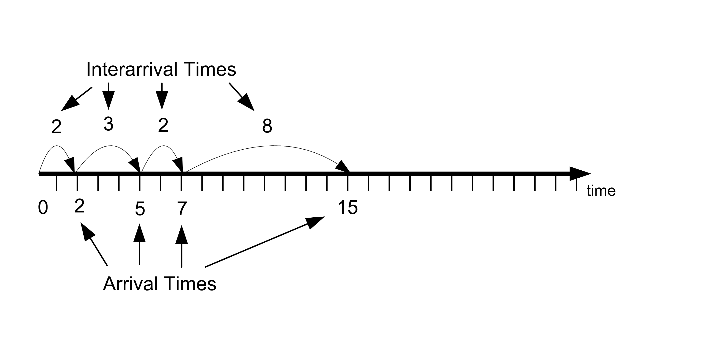
| Customer | Time of arrival | Time between arrival |
|---|---|---|
| 1 | 2 | 2 |
| 2 | 5 | 3 |
| 3 | 7 | 2 |
| 4 | 15 | 8 |
Figure 4.1 illustrates a time line of customer arrival events. The values for the arrival times in Table 4.1 have been rounded to whole numbers, but in general the arrival times can be any real valued numbers greater than zero. According to the figure, the first customer arrives at time two and there is an elapse of three minutes before customer 2 arrives at time five. From the discrete-event perspective, nothing is happening in the bank from time \([0,2)\); however, at time 2, an arrival event occurs and the subsequent actions associated with this event need to be accounted for with respect to the state of the system. An event denotes an instance of time that changes the state of the system. Since an event causes actions that result in a change of system state, it is natural to ask: What are the actions that occur when a customer arrives to the bank?
The customer enters the waiting line.
If there is an available teller, the customer will immediately exit the line and the available teller will begin to provide service.
If there are no tellers available, the customer will remain waiting in the line until a teller becomes available.
Now, consider the arrival of the first customer. Since the bank opens at 9 am with no customers and all the tellers idle, the first customer will enter and immediately exit the queue at time 9:02 am (or time 2) and then begin service. After the customer completes service, the customer will exit the bank. When a customer completes service (and departs the bank) the number of customers in the bank will decrease by one. It should be clear that some actions need to occur when a customer completes service. These actions correspond to the second event associated with this system: the customer service completion event. What are the actions that occur at this event?
The customer departs the bank.
If there are waiting customers, the teller indicates to the next customer that he/she will serve the customer. The customer will exit the waiting line and will begin service with the teller.
If there are no waiting customers, then the teller will become idle.
Figure 4.2 contains the service times for each of the four customers that arrived in Figure 4.1. Examine the figure with respect to customer 1. Based on the figure, customer 1 can enter service at time two because there were no other customers present in the bank. Suppose that it is now 9:02 am (time 2) and that the service time of customer 1 is known in advance to be 8 minutes as indicated in Table 4.2. From this information, the time that customer 1 is going to complete service can be pre-computed. From the information in the figure, customer 1 will complete service at time 10 (current time + service time = 2 + 8 = 10). Thus, it should be apparent, that for you to recreate the bank’s behavior over a time period that you must have knowledge of the customer’s service times. The service time of each customer coupled with the knowledge of when the customer began service allows the time that the customer will complete service and depart the bank to be computed in advance. A careful inspection of Figure 4.2 and knowledge of how banks operate should indicate that a customer will begin service either immediately upon arrival (when a teller is available) or coinciding with when another customer departs the bank after being served. This latter situation occurs when the queue is not empty after a customer completes service. The times that service completions occur and the times that arrivals occur constitute the pertinent events for simulating this banking system.
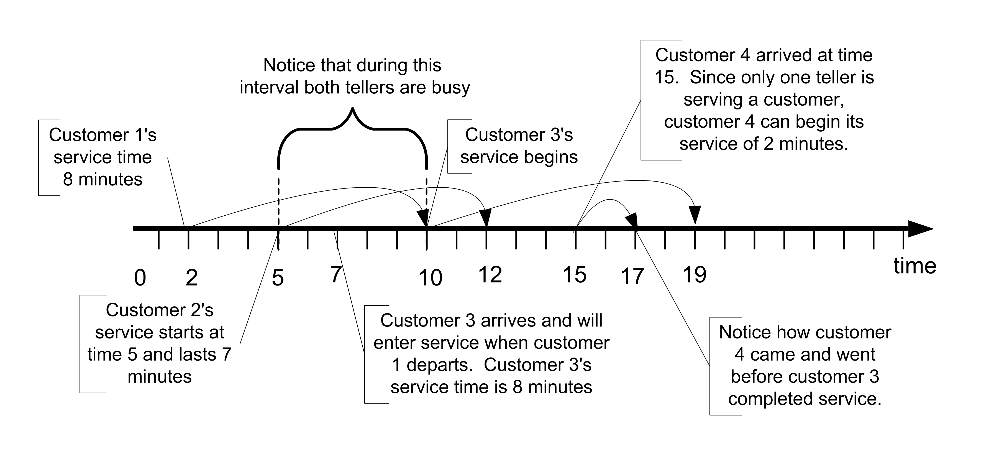
| Customer | Service Time Started | Service Time | Service Time Completed |
|---|---|---|---|
| 1 | 2 | 8 | 10 |
| 2 | 5 | 7 | 12 |
| 3 | 10 | 9 | 19 |
| 4 | 15 | 2 | 17 |
If the arrival and the service completion events are combined, then the time ordered sequence of events for the system can be determined. Figure 4.3 illustrates the events ordered by time from smallest event time to largest event time. Suppose you are standing at time two. Looking forward, the next event to occur will be at time 5 when the second customer arrives. When you simulate a system, you must be able to generate a sequence of events so that, at the occurrence of each event, the appropriate actions are invoked that change the state of the system.
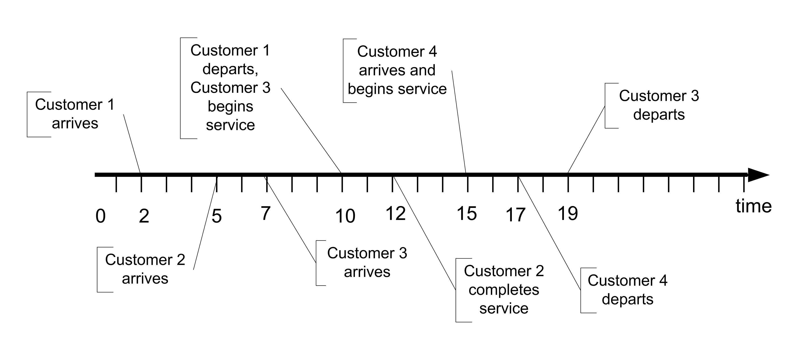
| Time | Event | Comment |
|---|---|---|
| 0 | Bank 0pens | |
| 2 | Arrival | Customer 1 arrives, enters service for 8 minutes, one teller becomes busy |
| 5 | Arrival | Customer 2 arrives, enters service for 7 minutes, the second teller becomes busy |
| 7 | Arrival | Customer 3 arrives, waits in queue |
| 10 | Service Completion | Customer 1 completes service, customer 3 exits the queue and enters service for 9 minutes |
| 12 | Service Completion | Customer 2 completes service, no customers are in the queue so a teller becomes idle |
| 15 | Arrival | Customer 4 arrives, enters service for 2 minutes, one teller becomes busy |
| 17 | Service Completion | Customer 4 completes service, a teller becomes idle |
| 19 | Service Completion | Customer 3 completes service |
The real system will simply evolve over time; however, a simulation of the system must recreate the events. In simulation, events are created by adding additional logic to the normal state changing actions. This additional logic is responsible for scheduling future events that are implied by the actions of the current event. For example, when a customer arrives, the time to the next arrival can be generated and scheduled to occur at some future time. This can be done by generating the time until the next arrival and adding it to the current time to determine the actual arrival time. Thus, all the arrival times do not need to be pre-computed prior to the start of the simulation. For example, at time two, customer 1 arrived. Customer 2 arrives at time 5. Thus, the time between arrivals (3 minutes) is added to the current time and customer 2’s arrival at time 5 is scheduled to occur. Every time an arrival occurs this additional logic is invoked to ensure that more arrivals will continue within the simulation.
Adding additional scheduling logic also occurs for service completion events. For example, since customer 1 immediately enters service at time 2, the service completion of customer 1 can be scheduled to occur at time 12 (current time + service time = 2 + 10 = 12). Notice that other events may have already been scheduled for times less than time 12. In addition, other events may be inserted before the service completion at time 12 actually occurs. From this, you should begin to get a feeling for how a computer program can implement some of these ideas.
Based on this intuitive notion for how a computer simulation may execute, you should realize that computer logic processing need only occur at the event times. That is, the state of the system does not change between events. Thus, it is not necessary to step incrementally through time checking to see if something happens at time 0.1, 0.2, 0.3, etc. (or whatever time scale you envision that is fine enough to not miss any events). Thus, in a discrete-event dynamic system simulation the clock does not “tick” at regular intervals. Instead, the simulation clock jumps from event time to event time. As the simulation moves from the current event to the next event, the current simulation time is updated to the time of the next event and any changes to the system associated with the next event are executed. This allows the simulation to evolve over time.
4.3 Simulating a Queueing System By Hand
This section builds on the concepts discussed in the previous section in order to provide insights into how discrete event simulations operate. In order to do this, we will simulate a simple queueing system by hand. That is, we will process each of the events that occur as well as the state changes in order to trace the operation of the system through time.
Consider again the simple banking system described in the previous section. To simplify the situation, we assume that there is only one teller that is available to provide service to the arriving customers. Customers that arrive while the teller is already helping a customer form a single waiting line, which is handled in a first come, first served manner. Let’s assume that the bank opens at 9 am with no customers present and the teller idle. The time of arrival of the first eight customers is provided in the following table.
| Customer Number | Time of Arrival | Service Time |
| 1 | 3 | 4 |
| 2 | 11 | 4 |
| 3 | 13 | 4 |
| 4 | 14 | 3 |
| 5 | 17 | 2 |
| 6 | 19 | 4 |
| 7 | 21 | 3 |
| 8 | 27 | 2 |
We are going to process these customers in order to recreate the behavior of this system over from time 0 to 31 minutes. To do this, we need to be able to perform the “bookkeeping” that a computer simulation model would normally perform for us. Thus, we will need to define some variables associated with the system and some attributes associated with the customers. Consider the following system variables.
System Variables
Let \(t\) represent the current simulation clock time.
Let \(N(t)\) represent the number of customers in the system (bank) at any time \(t\).
Let \(Q(t)\) represent the number of customers waiting in line for the teller at any time \(t\).
Let \(B(t)\) represent whether or not the teller is busy (1) or idle (0) at any time \(t\).
Because we know the number of tellers available, we know that the following relationship holds between the variables:
\[N\left( t \right) = Q\left( t \right) + B(t)\]
Note also that, knowledge of the value of \(N(t)\) is sufficient to determine the values of \(Q(t)\) and \(B(t)\) at any time \(t.\) For example, if we know that there are 3 customers in the bank, then \(N\left( t \right) = 3\), and since the teller must be serving 1 of those customers, \(B\left( t \right) = 1\) and there must be 2 customers waiting, \(Q\left( t \right) = 2\). In this situation, since \(N\left( t \right)\), is sufficient to determine all the other system variables, we can say that \(N\left( t \right)\) is the system’s state variable. The state variable(s) are the minimal set of system variables that are necessary to represent the system’s behavior over time. We will keep track of the values of all of the system variables during our processing in order to collect statistics across time. Quantities such as \(N(t), Q(t)\), and \(B(t)\) are variables that persist over time. In simulation, we call these variables time-persistent variables and we will need to collect specially defined statistics called time-persistent statistics on these quantities. This computation will be illustrated later in this section. Within the KSL, we will use the TWResponse class to collect time-persistent statistics.
Attributes are properties of things that move through the system. In the parlance of simulation, we call the things that move through the system entity instances or entities. In this situation, the entities are the customers, and we can define a number of attributes for each customer. Here, customer is a type of entity or entity type. If we have other things that flow through the system, we identity the different types (or entity types). The attributes of the customer entity type are as follows. Notice that each attribute is subscripted by \(i\), which indicates the \(i^{th}\) customer instance.
Entity Attributes
Let \(\mathrm{ID}_{i}\) be the identity number of the customer. \(\mathrm{ID}_{i}\) is a unique number assigned to each customer that identifies the customer from other customers in the system.
Let \(A_{i}\) be the arrival time of the \(i^{\mathrm{th}}\) customer.
Let \(S_{i}\) be the time the \(i^{\mathrm{th}}\) customer started service.
Let \(D_{i}\) be the departure time of the \(i^{\mathrm{th}}\) customer.
Let \(\mathrm{ST}_{i}\) be the service time of the \(i^{\mathrm{th}}\) customer.
Let \(T_{i}\) be the total time spent in the system of the \(i^{\mathrm{th}}\) customer.
Let \(W_{i}\) be the time spent waiting in the queue for the \(i^{\mathrm{th}}\) customer.
Quantities such as \(A_{i}, S_{i}, D_{i}, \mathrm{ST}_{i}, T_{i}\) and \(W_{i}\) all represent quantities that can be observed at specific event times. These quantities are often called observation-based or tally based variables. As we will see in subsequent sections of this chapter, we will used the KSL construct, Response, to capture statistics on these types of variables.
Clearly, there are also relationships between these attributes. We can compute the total time in the system for each customer from their arrival and departure times:
\[T_{i} = D_{i} - A_{i}\]
In addition, we can compute the time spent waiting in the queue for each customer as:
\[W_{i} = T_{i} - \mathrm{ST}_{i} = S_{i} - A_{i}\]
As in the previous section, there are two types of events: arrivals and departures. Let \(E(t)\) be (A) for an arrival event at time \(t\) and be (D) for a departure event at time \(t\). As we process each event, we will keep track of when the event occurs and the type of event. We will also keep track of the state of the system after each event has been processed. To make this easier, we will keep track of the system variables and the entity attributes within a table as follows.
In the table, we see that the initial state of the system is empty and idle. Since there are no customers in the bank, there are no tabulated attribute values within the table. Reviewing the provided information, we see that customer 1 arrives at \(t = 3\) and has a service time of 4 minutes. Thus,\(\ \text{ID}_{1} = 1\), \(A_{1} = 3\), and \(\text{ST}_{1} = 4\). We can enter this information directly into our bookkeeping table. In addition, because the bank was empty and idle when the customer arrived, we can note that the time that customer 1 starts service is the same as the time of their arrival and that they did not spend any time waiting in the queue. Thus, \(S_{1} = 3\) and \(W_{1} = 0\). The table has been updated as follows.
| t | E(t) | N(t) | B(t) | Q(t) | ID(i) | A(i) | ST(i) | S(i) | D(i) | T(i) | W(i) | Pending E(t) |
|---|---|---|---|---|---|---|---|---|---|---|---|---|
| 0 | NA | 0 | 0 | 0 | NA | NA | NA | NA | NA | NA | NA | NA |
| 3 | A | 1 | 1 | 0 | 1 | 3 | 4 | 3 | NA | NA | 0 | E(7) = D(1), E(11) = A(2) |
Because customer 1 arrived to an empty system, they immediately started service at time 3. Since we know the service time of the customer, \(\text{ST}_{1} = 4\), and the current time, \(t = 3\), we can determine that customer 1, will depart from the system at time 7 (\(t = 3 + 4 = 7\)). That means we will have a departure event for customer 1 at time 7. According to the provided data, the next customer, customer 2, will arrive at time 11. Thus, we have two pending events, a departure of customer 1 at time 7 and the arrival of customer 2 at time 11. This fact is noted in the column labeled “Pending E(t)” for pending events. Here E(7) = D(1), E(11) = A(2) indicates that customer 1 with depart,\(\ D_{1},\) at time 7, \(E\left( 7 \right)\) and customer 2 will arrive, \(A_{2}\), at the event at time 11, \(E(11)\). Clearly, the next event time will be the minimum of 7 and 11, which will be the departure of the first customer. Thus, our bookkeeping table can be updated as follows.
| t | E(t) | N(t) | B(t) | Q(t) | ID(i) | A(i) | ST(i) | S(i) | D(i) | T(i) | W(i) | Pending E(t) |
|---|---|---|---|---|---|---|---|---|---|---|---|---|
| 0 | NA | 0 | 0 | 0 | NA | NA | NA | NA | NA | NA | NA | NA |
| 3 | A | 1 | 1 | 0 | 1 | 3 | 4 | 3 | NA | NA | 0 | E(7) = D(1), E(11) = A(2) |
| 7 | D | 0 | 0 | 0 | 1 | 3 | 4 | 3 | 7 | 4 | 0 | E(11) = A(2) |
Since there are no customers in the bank and only the one pending event, the next event will be the arrival of customer 2 at time 11. The table can be updated as follows.
| t | E(t) | N(t) | B(t) | Q(t) | ID(i) | A(i) | ST(i) | S(i) | D(i) | T(i) | W(i) | Pending E(t) |
|---|---|---|---|---|---|---|---|---|---|---|---|---|
| 0 | NA | 0 | 0 | 0 | NA | NA | NA | NA | NA | NA | NA | NA |
| 3 | A | 1 | 1 | 0 | 1 | 3 | 4 | 3 | NA | NA | 0 | E(7) = D(1), E(11) = A(2) |
| 7 | D | 0 | 0 | 0 | 1 | 3 | 4 | 3 | 7 | 4 | 0 | E(11) = A(2) |
| 11 | A | 1 | 1 | 0 | 2 | 11 | 4 | 11 | NA | NA | 0 | E(13) = A(3), E(15) = D(2) |
Since the pending event set is E(13) = A(3), E(15) = D(2) the next event will be the arrival of the third customer at time 13 before the departure of the second customer at time 15. We will now have a queue form. Updating our bookkeeping table, yields:
| t | E(t) | N(t) | B(t) | Q(t) | ID(i) | A(i) | ST(i) | S(i) | D(i) | T(i) | W(i) | Pending E(t) |
|---|---|---|---|---|---|---|---|---|---|---|---|---|
| 0 | NA | 0 | 0 | 0 | NA | NA | NA | NA | NA | NA | NA | NA |
| 3 | A | 1 | 1 | 0 | 1 | 3 | 4 | 3 | NA | NA | 0 | E(7) = D(1), E(11) = A(2) |
| 7 | D | 0 | 0 | 0 | 1 | 3 | 4 | 3 | 7 | 4 | 0 | E(11) = A(2) |
| 11 | A | 1 | 1 | 0 | 2 | 11 | 4 | 11 | NA | NA | 0 | E(13) = A(3), E(15) = D(2) |
| 13 | A | 2 | 1 | 1 | 3 | 13 | 4 | 15 | NA | NA | 2 | E(14) = A(4), E(15) = D(2) |
Notice that in the last table update, we did not update \(S_{i}\) and \(W_{i}\) because customer 3 had to wait in queue and did not start service. Customer 3 will start service, when customer 2 departs. Reviewing the pending event set, we see that the next event will be the arrival of customer 4 at time 14, which yields the following bookkeeping table.
| t | E(t) | N(t) | B(t) | Q(t) | ID(i) | A(i) | ST(i) | S(i) | D(i) | T(i) | W(i) | Pending E(t) |
|---|---|---|---|---|---|---|---|---|---|---|---|---|
| 0 | NA | 0 | 0 | 0 | NA | NA | NA | NA | NA | NA | NA | NA |
| 3 | A | 1 | 1 | 0 | 1 | 3 | 4 | 3 | NA | NA | 0 | E(7) = D(1), E(11) = A(2) |
| 7 | D | 0 | 0 | 0 | 1 | 3 | 4 | 3 | 7 | 4 | 0 | E(11) = A(2) |
| 11 | A | 1 | 1 | 0 | 2 | 11 | 4 | 11 | NA | NA | 0 | E(13) = A(3), E(15) = D(2) |
| 13 | A | 2 | 1 | 1 | 3 | 13 | 4 | 15 | NA | NA | 2 | E(14) = A(4), E(15) = D(2) |
| 14 | A | 3 | 1 | 2 | 4 | 14 | 3 | 19 | NA | NA | 5 | E(15) = D(2), E(17) = A(5) |
Notice that we now have 3 customers in the system, 1 in service and 2 waiting in the queue. Reviewing the pending event set, we see that customer 2 will finally complete service and depart at time 15.
| t | E(t) | N(t) | B(t) | Q(t) | ID(i) | A(i) | ST(i) | S(i) | D(i) | T(i) | W(i) | Pending E(t) |
|---|---|---|---|---|---|---|---|---|---|---|---|---|
| 0 | NA | 0 | 0 | 0 | NA | NA | NA | NA | NA | NA | NA | NA |
| 3 | A | 1 | 1 | 0 | 1 | 3 | 4 | 3 | NA | NA | 0 | E(7) = D(1), E(11) = A(2) |
| 7 | D | 0 | 0 | 0 | 1 | 3 | 4 | 3 | 7 | 4 | 0 | E(11) = A(2) |
| 11 | A | 1 | 1 | 0 | 2 | 11 | 4 | 11 | NA | NA | 0 | E(13) = A(3), E(15) = D(2) |
| 13 | A | 2 | 1 | 1 | 3 | 13 | 4 | 15 | NA | NA | 2 | E(14) = A(4), E(15) = D(2) |
| 14 | A | 3 | 1 | 2 | 4 | 14 | 3 | 19 | NA | NA | 5 | E(15) = D(2), E(17) = A(5) |
| 15 | D | 2 | 1 | 1 | 2 | 11 | 4 | 11 | 15 | 4 | 0 | E(17) = A(5), E(19) = D(3) |
Because customer 2 completes service at time 15 and customer 3 is waiting in the line, we see that customer 3’s attributes for \(S_{i}\) and \(W_{i}\) were updated within the table. Since customer 3 has started service and we know their service time of 4 minutes, we know that they will depart at time 19. The pending events set has been updated accordingly and indicates that the next event will be the arrival of customer 5 at time 17.
| t | E(t) | N(t) | B(t) | Q(t) | ID(i) | A(i) | ST(i) | S(i) | D(i) | T(i) | W(i) | Pending E(t) |
|---|---|---|---|---|---|---|---|---|---|---|---|---|
| 0 | NA | 0 | 0 | 0 | NA | NA | NA | NA | NA | NA | NA | NA |
| 3 | A | 1 | 1 | 0 | 1 | 3 | 4 | 3 | NA | NA | 0 | E(7) = D(1), E(11) = A(2) |
| 7 | D | 0 | 0 | 0 | 1 | 3 | 4 | 3 | 7 | 4 | 0 | E(11) = A(2) |
| 11 | A | 1 | 1 | 0 | 2 | 11 | 4 | 11 | NA | NA | 0 | E(13) = A(3), E(15) = D(2) |
| 13 | A | 2 | 1 | 1 | 3 | 13 | 4 | 15 | NA | NA | 2 | E(14) = A(4), E(15) = D(2) |
| 14 | A | 3 | 1 | 2 | 4 | 14 | 3 | 19 | NA | NA | 5 | E(15) = D(2), E(17) = A(5) |
| 15 | D | 2 | 1 | 1 | 2 | 11 | 4 | 11 | 15 | 4 | 0 | E(17) = A(5), E(19) = D(3) |
| 17 | A | 3 | 1 | 2 | 5 | 17 | 2 | 22 | NA | NA | 5 | E(19) = D(3), E(19) = A(6) |
Now, we have a very interesting situation with the pending event set. We have two events that are scheduled to occur at the same time, the departure of customer 3 at time 19 and the arrival of customer 6 at time 19. In general, the order in which events are processed that occur at the same time may affect how future events are processed. That is, the order of event processing may change the behavior of the system over time and thus the order of processing is, in general, important. However, in this particular simple system, the order of processing will not change what happens in the future. We will simply have an update of the state variables at the same time. In this instance, we will process the departure event first and then the arrival event. If you are not convinced that this will not make a difference, then I encourage you to change the ordering and continue the processing. In more complex system simulations, a priority indicator is attached to the events so that the events can be processed in a consistent manner. Rather than continuing the step-by-step processing of the events through time 31, we will present the completed table. We leave it as an exercise for the reader to continue the processing of the customers. The completed bookkeeping table at time 31 is as follows.
| t | E(t) | N(t) | B(t) | Q(t) | ID(i) | A(i) | ST(i) | S(i) | D(i) | T(i) | W(i) | Pending E(t) |
|---|---|---|---|---|---|---|---|---|---|---|---|---|
| 0 | NA | 0 | 0 | 0 | NA | NA | NA | NA | NA | NA | NA | NA |
| 3 | A | 1 | 1 | 0 | 1 | 3 | 4 | 3 | NA | NA | 0 | E(7) = D(1), E(11) = A(2) |
| 7 | D | 0 | 0 | 0 | 1 | 3 | 4 | 3 | 7 | 4 | 0 | E(11) = A(2) |
| 11 | A | 1 | 1 | 0 | 2 | 11 | 4 | 11 | NA | NA | 0 | E(13) = A(3), E(15) = D(2) |
| 13 | A | 2 | 1 | 1 | 3 | 13 | 4 | 15 | NA | NA | 2 | E(14) = A(4), E(15) = D(2) |
| 14 | A | 3 | 1 | 2 | 4 | 14 | 3 | 19 | NA | NA | 5 | E(15) = D(2), E(17) = A(5) |
| 15 | D | 2 | 1 | 1 | 2 | 11 | 4 | 11 | 15 | 4 | 0 | E(17) = A(5), E(19) = D(3) |
| 17 | A | 3 | 1 | 2 | 5 | 17 | 2 | 22 | NA | NA | 5 | E(19) = D(3), E(19) = A(6) |
| 19 | D | 2 | 1 | 1 | 3 | 13 | 4 | 15 | 19 | 6 | 2 | E(19) = A(6) |
| 19 | A | 3 | 1 | 2 | 6 | 19 | 4 | 24 | NA | NA | 5 | E(21) = A(7), E(22) = D(4) |
| 21 | A | 4 | 1 | 3 | 7 | 21 | 3 | 28 | NA | NA | 7 | E(22) = D(4), E(24) = D(5) |
| 22 | D | 3 | 1 | 2 | 4 | 14 | 3 | 19 | 22 | 8 | 5 | E(24) = D(5), E(27) = A(8) |
| 24 | D | 2 | 1 | 1 | 5 | 17 | 2 | 22 | 24 | 7 | 5 | E(27) = A(8), E(28) = D(6) |
| 27 | A | 3 | 1 | 2 | 8 | 27 | 2 | 31 | NA | NA | 4 | E(28) = D(6), E(31) = D(7) |
| 28 | D | 2 | 1 | 1 | 6 | 19 | 4 | 24 | 28 | 9 | 5 | E(31) = D(7) |
| 31 | D | 1 | 1 | 0 | 7 | 21 | 3 | 28 | 31 | 10 | 7 | E(33) = D(8) |
Given that we have simulated the bank over the time frame from 0 to 31 minutes, we can now compute performance statistics for the bank and measure how well it is operating. Two statistics that we can easily compute are the average time spent waiting in line and the average time spent in the system.
Let \(n\) be the number of customers observed to depart during the simulation. In this simulation, we had \(n = 7\) customers depart during the time frame of 0 to 31 minutes. The time frame over which we analyze the performance of the system is call the simulation time horizon. In this case, the simulation time horizon is fixed and known in advance. When we perform a computer simulation experiment, the time horizon is often referred to as the simulation run length (or simulation replication length). To estimate the average time spent waiting in line and the average time spent in the system, we can simply compute the sample averages ( \(\overline{T}\) and \(\bar{W})\) of the observed quantities (\(T_{i}\) and \(W_{i}\))for each departed customer.
\[\overline{T} = \frac{1}{7}\sum_{i = 1}^{7}T_{i} = \frac{4 + 4 + 6 + 8 + 7 + 9 + 10}{7} = \frac{48}{7} \cong 6.8571\]
\[\overline{W} = \frac{1}{7}\sum_{i = 1}^{7}W_{i} = \frac{0 + 0 + 2 + 5 + 5 + 5 + 7}{7} = \frac{24}{7} \cong 3.4286\]
These statistical quantities are based on observations and we use our standard approach to computing averages for these observations. Besides the average time spent in the system and the average time spent waiting, we might also want to compute the average number of customers in the system, the average number of customers in the queue, and the average number of busy tellers. You might be tempted to simply average the values in the \(N(t)\), \(B(t)\), and \(Q(t)\) columns of the bookkeeping table. Unfortunately, that will result in an incorrect estimate of these values because a simple average will not take into account how long each of the variables persisted with its values over time. In this situation, we are really interested in computed a time average. This is because the variables, \(N(t)\), \(B(t)\), and \(Q(t)\) are called time-persistent variables. This type of variable is always encountered in discrete event simulations.
To make the discussion concrete, let’s focus on the number of customers in the queue, \(Q(t)\). Notice the number of customers in the queue, \(Q(t)\) takes on constant values during intervals of time corresponding to when the queue has a certain number of customers. \(Q(t) = \{ 0,1,2,3,\ldots\}\). The values of \(Q(t)\) form a step function in this particular case. The following figure illustrates the step function nature of this type of variable. A realization of the values of variable is called a sample path.
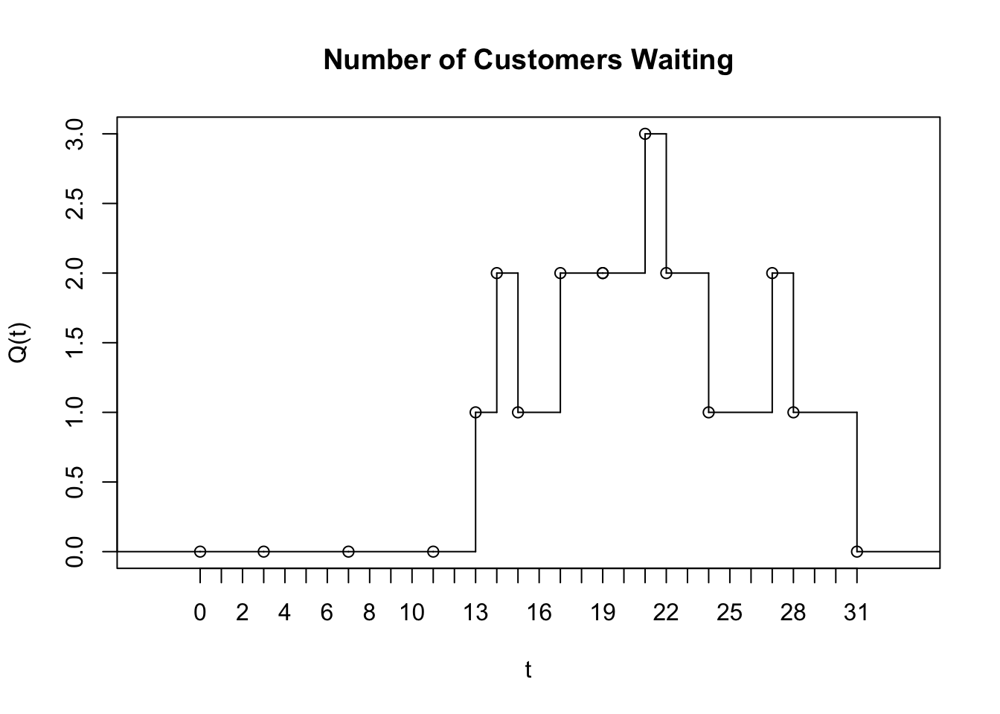
That is, for a given (realized) sample path, \(Q(t)\) is a function that returns the number of customers in the queue at time \(t\). The mean value theorem of calculus for integrals states that given a function, \(f( \bullet )\), continuous on an interval \((a, b)\), there exists a constant, c, such that
\[\int_{a}^{b}{f\left( x \right)\text{dx}} = f(c)(b - a)\]
\[f\left( c \right) = \frac{\int_{a}^{b}{f\left( x \right)\text{dx}}}{(b - a)}\]
The value, \(f(c)\), is called the mean value of the function. A similar function can be defined for \(Q(t)\) This function is called the time-average (and represents the mean value of the \(Q(t)\) function):
\[\overline{Q} = \frac{\int_{t_{0}}^{t_{n}}{Q\left( t \right)\text{dt}}}{t_{n} - t_{0}}\]
This function represents the average with respect to time of the given state variable. This type of statistical variable is called time-persistent because \(Q(t)\) is a function of time.
In the particular case where \(Q(t)\) represents the number of customers in the queue, \(Q(t)\) will take on constant values during intervals of time corresponding to when the queue has a certain number of customers. Let \(Q\left( t \right) = \ q_{k}\ \)for\(\ t_{k - 1} \leq t \leq t_{k}\). Then, the time-average can be rewritten as follows:
\[\overline{Q} = \frac{\int_{t_{0}}^{t_{n}}{Q\left( t \right)\text{dt}}}{t_{n} - t_{0}} = \sum_{k = 1}^{n}\frac{q_{k}(t_{k} - t_{k - 1})}{t_{n} - t_{0}}\] Note that \(q_{k}(t_{k} - t_{k - 1})\) is the area under the curve, \(Q\left( t \right)\) over the interval \(t_{k - 1} \leq t \leq t_{k}\) and because \[t_{n} - t_{0} = \left( t_{1} - t_{0} \right) + \left( t_{2} - t_{1} \right) + \left( t_{3} - t_{2} \right) + \ \cdots + \left( t_{n - 1} - t_{n - 2} \right) + \ \left( t_{n} - t_{n - 1} \right)\] we can write, \[t_{n} - t_{0} = \sum_{k = 1}^{n}{t_{k} - t_{k - 1}}\]
The quantity \(t_{n} - t_{0}\) represents the total time over which the variable is observed. Thus, the time average is simply the area under the curve divided by the amount of time over which the curve is observed. From this equation, it should be noted that each value of \(q_{k}\) is weighted by the length of time that the variable has the value. If we define, \(w_{k} = (t_{k} - t_{k - 1})\), then we can re-write the time average as:
\[\overline{Q} = \frac{\int_{t_{0}}^{t_{n}}{Q\left( t \right)\text{dt}}}{t_{n} - t_{0}} = \sum_{k = 1}^{n}\frac{q_{k}(t_{k} - t_{k - 1})}{t_{n} - t_{0}} = \frac{\sum_{k = 1}^{n}{q_{k}w_{k}}}{\sum_{i = 1}^{n}w_{k}}\]
This form of the equation clearly shows that each value of \(q_{k}\) is weighted by:
\[\frac{w_{k}}{\sum_{i = 1}^{n}w_{k}} = \frac{w_{k}}{t_{n} - t_{0}} = \frac{(t_{k} - t_{k - 1})}{t_{n} - t_{0}}\]
This is why the time average is often called the time-weighted average. If \(w_{k} = 1\), then the time-weighted average is the same as the sample average.
Now we can compute the time average for \(Q\left( t \right),\ N\left( t \right)\) and \(B(t)\). Using the following formula and noting that \(t_{n} - t_{0} = 31\)
\[\overline{Q} = \sum_{k = 1}^{n}\frac{q_{k}(t_{k} - t_{k - 1})}{t_{n} - t_{0}}\]
We have that the numerator computes as follows:
\[\sum_{k = 1}^{n}{q_{k}\left( t_{k} - t_{k - 1} \right)} = 0\left( 13 - 0 \right) + \ 1\left( 14 - 13 \right) + \ 2\left( 15 - 14 \right) + \ 1\left( 17 - 15 \right) + \ 2\left( 19 - 17 \right)\]
\[\ + 1\left( 19 - 19 \right) + \ 2\left( 21 - 19 \right) + \ 3\left( 22 - 21 \right) + \ 2\left( 24 - 22 \right) + \ \]
\[1\left( 27 - 24 \right) + \ 2\left( 28 - 27 \right) + \ 1\left( 31 - 28 \right) = 28\]
And, the final time-weighted average number in the queue ss:
\[\overline{Q} = \frac{28}{31} \cong 0.903\]
The average number in the system and the average number of busy tellers can also be computed in a similar manner, resulting in:
\[\overline{N} = \frac{52}{31} \cong 1.677\]
\[\overline{B} = \frac{24}{31} \cong 0.7742\]
The value of \(\overline{B}\) is most interesting for this situation. Because there is only 1 teller, the fraction of the tellers that are busy is 0.7742. This quantity represents the utilization of the teller. The utilization of a resource represents the proportion of time that the resource is busy. Let c represent the number of units of a resource that are available. Then the utilization of the resource is defined as:
\[\overline{U} = \frac{\overline{B}}{c} = \frac{\int_{t_{0}}^{t_{n}}{B\left( t \right)\text{dt}}}{c(t_{n} - t_{0})}\]
Notice that the numerator of this equation is simply the total time that the resource is busy. So, we are computing the total time that the resource is busy divided by the total time that the resource could be busy, \(c(t_{n} - t_{0})\), which is considered the utilization.
In this simple example, when an arrival occurs, you must determine whether or not the customer will enter service or wait in the queue. When a customer departs the system, whether or not the server will become idle must be determined, by checking the queue. If the queue is empty, then the server becomes idle; otherwise the next customer in the queue begins service. In order to develop a computer simulation model of this situation, the actions that occur at an event must be represented within code. For example, the pseudo-code for the arrival event would be:
Pseudo-code for Arrival Event
schedule arrival time of next customer
AT = generate time to next arrival according to inter-arrival distribution
schedule arrival event at, t + AT
check status of the servers (idle or busy)
if idle, do
allocate a server to the customer
ST = generate service time according to the service time distribution
schedule departure event at, t + ST
if busy, do
- increase number in queue by 1 (place customer in queue)
Pseudo-code for Departure Event
if queue is not empty
remove next customer from the queue
allocate the server to the next customer in the queue
ST = generate service time according to the service time distribution
schedule departure event at, t + ST
else the queue is empty
- make the customer’s server idle
Notice how the arrival event schedules the next arrival and the departure event may schedule the next departure event (provided the queue is not empty). Within the KSL, this pseudo-code must be represented in a class method that will be called at the appropriate event time.
To summarize, discrete-event modeling requires two key abilities:
The ability to represent the actions associated with an event in computer code (i.e. in a class method).
The ability to schedule events so that they will be called at the appropriate event time, i.e. the ability to have the event’s logic called at the appropriate event time.
Thus, the scheduling and execution of events is critical to discrete-event modeling. The scheduling of additional events within an event is what makes the system progress through time (jumping from event to event). The KSL supports the scheduling and execution of events within its calendar and model packages. The next section overviews the libraries available within the KSL for discrete-event modeling.
4.4 Modeling DEDS in the KSL
Discrete event modeling within the KSL is facilitated by two packages: 1) the ksl.simulation package and 2) the ksl.calendar package. The ksl.simulation package has classes that implement behavior associated with simulation events and models. The ksl.calendar package has classes that facilitate the scheduling and processing of events.
4.4.1 Event Scheduling
The following classes within the ksl.simulation package work together to provide for the scheduling and execution of events:
Model- An instance ofModelholds the model and facilitates the running of the simulation according to run parameters such as simulation run length and number of replications. An instance of a Model is required to serve as the parent to any model elements within a simulation model. It is the top-level container for model elements.Executive- The Executive controls the execution of the events and works with the calendar package to ensure that events are executed and the appropriate model logic is called at the appropriate event time. This class is responsible for placing the events on a calendar, allowing events to be canceled, and executing the events in the correct order.KSLEvent– This class represents a simulation event. The attributes ofKSLEventprovide information about the name, time, priority, and type of the event. The user can also check whether or not the event is canceled or if it has been scheduled. In addition, a generic attribute of type<T>can be associated with an event and can be used to pass information along with the event.ModelElement– This class serves as a base class for all classes that are within a simulation model. It provides access to the scheduler and ensures that model elements participate in common simulation actions (e.g. warm up, initialization, etc.).
Figure 4.5 illustrates the relationships between the classes Model, ModelElement, and Executive. The ModelElement class represents the primary building block for KSL models. A ModelElement represents something (an element) that can be placed within an instance of a Model. The Model class subclasses ModelElement. Every ModelElement can contain many other instances of ModelElement. As such, an instance of a Model can also contain model elements. There can only be one instance of the Model class within the simulation. It acts as the parent (container) for all other model elements. Model elements in turn also hold other model elements. Instances arranged in this pattern form an object hierarchy that represents the simulation model. The instance of a Model holds (references) the instance of the Executive class. The instance of the Executive uses an instance of a class that implements the CalendarIfc interface. The simulation also references an instance of the Experiment class. The Experiment class allows the specification and control of the run parameters for the simulation. Every instance of a ModelElement must be a child of another ModelElement or the Model. This implies that instances of ModelElement have access to the main model, which has access to an instance of Model and thus the instance of the Executive. Therefore sub-classes of ModelElement have access to the Executive and can schedule events.
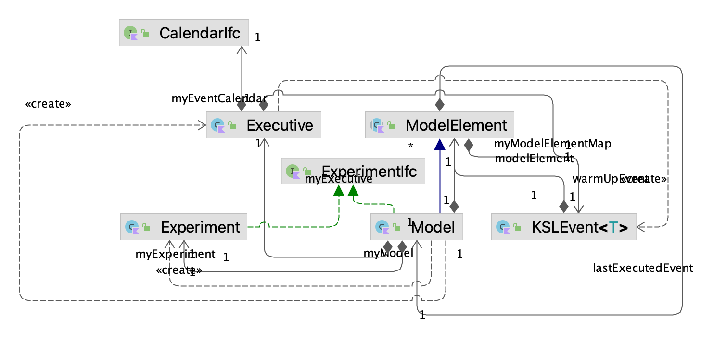
ModelElement is an abstract base class for building other classes that can exist within a model. Sub-classes of the ModelElement class will have a set of methods that facilitate the scheduling of events.
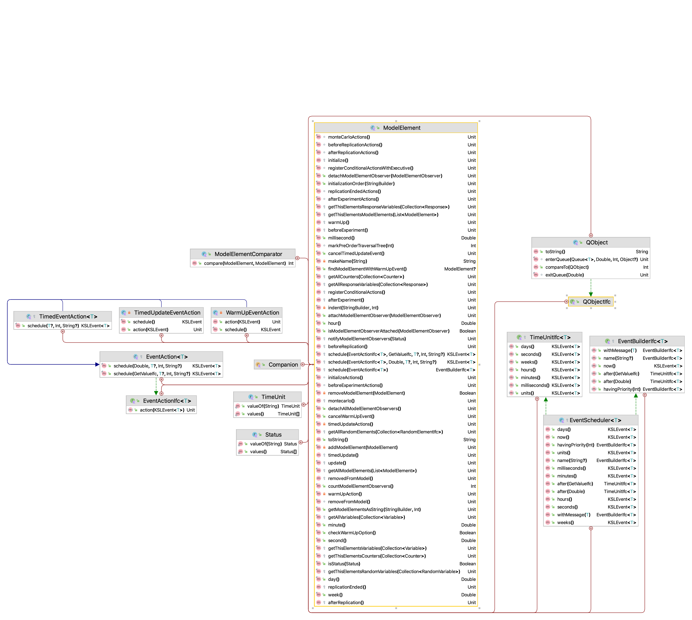
Figure 4.6 illustrates the protected methods of the ModelElement class. Since these methods are protected, sub-classes will have them available through inheritance. The scheduling of new events results in the creation of a new KSLEvent instance and the placement of the event on the event calendar via the Executive.
The following code listing illustrates the key method for scheduling events within the class ModelElement Notice that the instance of the Executive is called via executive property. In addition, the user can supply information for the creation of an event such as its time, name, and priority. The user can also provide an instance of classes that implement the EventActionIfc interface. This interface promises to have an action() method. Within the action() method the user can provide the code that is necessary to represent the state changes associated with the event.
/**
* Allows event actions to be scheduled by model elements
* @param eventAction the event action to schedule
* @param timeToEvent the time to the next action
* @param priority the priority of the action
* @param message a general object to attach to the action
* @param name a name to associate with the event for the action
* @return the scheduled event
*/
protected fun <T> schedule(
eventAction: EventActionIfc<T>,
timeToEvent: Double,
message: T? = null,
priority: Int = KSLEvent.DEFAULT_PRIORITY,
name: String? = null
): KSLEvent<T> {
return executive.scheduleEvent(this, eventAction, timeToEvent, message, priority, name)
}There are two ways that the user can provide event action code: 1) provide a class that implements the EventActionIfc interface and supply it when scheduling the event or 2) by treating the EventActionIfc as a functional interface and using Kotlin’s functional method representation.
Notice that besides the schedule() method of the ModelElement class, the EventAction class definition also facilitates the scheduling of the event action.
protected abstract inner class EventAction<T> : EventActionIfc<T> {
/**
* Allows event actions to more conveniently schedule themselves
* @param timeToEvent the time to the next action
* @param priority the priority of the action
* @param message a general object to attach to the action
* @param name a name to associate with the event for the action
* @return the scheduled event
*/
fun schedule(
timeToEvent: Double,
message: T? = null,
priority: Int = KSLEvent.DEFAULT_PRIORITY,
name: String? = null
): KSLEvent<T> {
return schedule(this, timeToEvent, message, priority, name)
}
fun schedule(
timeToEvent: GetValueIfc,
message: T? = null,
priority: Int = KSLEvent.DEFAULT_PRIORITY,
name: String? = null
): KSLEvent<T> {
return schedule(timeToEvent.value, message, priority, name)
}
}These scheduling methods have also been overloaded to allow the specification of time via instances that implement the GetValueIfc. This allows instances of random variables to be used directly with the time until the event ultimately being randomly drawn from the distribution.
4.4.2 Simple Event Scheduling Examples
This section presents two simple examples to illustrate event scheduling. The first example illustrates the scheduling of events using the EventActionIfc interface. The second example shows how to simulate a Poisson process and collect simple statistics.
4.4.2.1 Implementing Event Actions Using the EventActionIfc Interface
In the first example, there will be two events scheduled with actions. The time between the events will all be deterministic. The specifics of the events are as follows:
- Event Action One: This event occurs only once at time 10.0 and schedules the Action Two event to occur 5.0 time units later. It also prints out a message.
- Event Action Two: This event prints out a message. Then, it schedules an action one event 15 time units into the future. It also reschedules itself to reoccur in 20 minutes.
The following code listing provides the code for this simple event example. Let’s walk carefully through the construction and execution of this code.
First, the class sub-classes from ModelElement. This enables the class to have access to all the scheduling methods within ModelElement and provides one method that needs to be overridden: initialize(). Every ModelElement has an initialize() method. The initialize() method does nothing within the class ModelElement. However, the initialize() method is critical to properly modeling using instances of ModelElement within the KSL architecture. The purpose of the initialize() method is to provide code that can occur once at the beginning of each replication of the simulation, prior to the execution of any events. Thus, the initialize() method is the perfect location to schedule initial events onto the event calendar so that when the replications associated with the simulation are executed initial events will be on the calendar ready for execution. Notice that in this example the initialize() method does two things:
- schedules the first event action one event at time 10.0 via the call:
scheduleEvent(myEventActionOne, 10.0) - schedules the first action two event at time 20.0 via the call:
scheduleEvent(myEventActionTwo, 20.0)
Example 4.1 (Scheduling Events) This example code illustrates how to create event actions and to schedule their occurrence at specific event times.
class SchedulingEventExamples (parent: ModelElement, name: String? = null) :
ModelElement(parent, name) {
private val myEventActionOne: EventActionOne = EventActionOne()
private val myEventActionTwo: EventActionTwo = EventActionTwo()
override fun initialize() {
// schedule a type 1 event at time 10.0
schedule(myEventActionOne, 10.0)
// schedule an event that uses myEventAction for time 20.0
schedule(myEventActionTwo, 20.0)
}
private inner class EventActionOne : EventAction<Nothing>() {
override fun action(event: KSLEvent<Nothing>) {
println("EventActionOne at time : $time")
}
}
private inner class EventActionTwo : EventAction<Nothing>() {
override fun action(event: KSLEvent<Nothing>) {
println("EventActionTwo at time : $time")
// schedule a type 1 event for time t + 15
schedule(myEventActionOne, 15.0)
// reschedule the EventAction event for t + 20
schedule(myEventActionTwo, 20.0)
}
}
}The the function call scheduleEvent(myEventActionTwo, 20.0) schedules an event 20 time units into the future where the event will be handled via the instance of the class EventActionTwo, which implements the EventActionIfc interface. The reference myEventActionTwo refers to an object of type EventActionTwo, which is an instance of the inner classes defined within SchedulingEventExamples. This variable is defined as as class property on line 4 and an instance is created via the constructor. To summarize, the initialize() method is used to schedule the initial occurrences of the two types of events. The initialize() method occurs right before time 0.0. That is, it occurs right before the simulation clock starts.
Now, let us examine the actions that occur for the two types of events. Within the action() method of EventActionOne, we see the following code:
println("EventActionOne at time : $time")Here a simple message is printed that includes the simulation time via the inherited time property of the ModelElement class. Thus, by implementing the action() method of the EventActionIfc interface, you can supply the logic that occurs when the event is executed by the simulation executive. In the implemented EventActionTwo class, a simple message is printed and event action one is scheduled. In addition, the schedule() method is used to reschedule the action() method. The following code illustrates how to setup and run the simulation.
fun main() {
val m = Model("Scheduling Example")
SchedulingEventExamples(m.model)
m.lengthOfReplication = 100.0
m.simulate()
}The main method associated with the SchedulingEventExamples class indicates how to create and run a simulation model. The first line of the main method creates an instance of a Model. The next line makes an instance of SchedulingEventExamples and attaches it to the simulation model. The property called, s.model returns an instance of the Model class that is associated with the instance of the simulation. The next line sets up the simulation to run for 100 time units and the last line tells the simulation to begin executing via the simulate() method. The output of the code is as follows:
EventActionOne at time : 10.0
EventActionTwo at time : 20.0
EventActionOne at time : 35.0
EventActionTwo at time : 40.0
EventActionOne at time : 55.0
EventActionTwo at time : 60.0
EventActionOne at time : 75.0
EventActionTwo at time : 80.0
EventActionOne at time : 95.0
EventActionTwo at time : 100.0Notice that event action one output occurs at time 10.0. This is due to the event that was scheduled within the initialize() method. Event action two occurs for the first time at time 20.0 and then every 20 time units. Notice that event action one occurs at time 35.0. This is due to the event being scheduled in the action method of event action two.
4.4.2.2 Overview of Simuation Run Context
When the simulation runs, much underlying code is executed. At this stage it is not critically important to understand how this code works; however, it is useful to understand, in a general sense, what is happening. The following outlines the basic processes that are occurring when s.simulate() occurs:
Setup the simulation experiment
For each replication of the simulation:
Initialize the replication
Initialize the executive and calendar
Initialize the model and all model elements
While there are events on the event calendar or the simulation is not stopped
Determine the next event to execute
Update the current simulation time to the time of the next event
Call the action() method of the instance of
EventActionIfcthat was attached to the next event.Execute the actions associated with the next event
Execute end of replication model logic
Execute end of simulation experiment logic
Step 2(b) initializes the executive and calendar and ensures that there are no events at the beginning of the simulation. It also resets the simulation time to 0.0. Then, step 2(c) initializes the model. In this step, the initialize() methods of all of the model elements are executed. This is why it was important to implement the initialize() method in the example and have it schedule the initial events. Then, step 2(d) begins the execution of the events that were placed on the calendar. In looking at the code listings, it is not possible to ascertain how the action() methods are actually invoked unless you understand that during step 2(d) each scheduled event is removed from the calendar and its associated action called. In the case of the event action one and two events in the example, these actions are specified in the action() method of EventActionOne and EventActionTwo. After all the events in the calendar are executed or the simulation is not otherwise stopped, the replication is ended. Any clean up logic (such as statistical collection) is executed at the end of the replication. Finally, after all replications have been executed, any logic associated with ending the simulation experiment is invoked. Thus, even though the code does not directly call the event logic it is still invoked by the simulation executive because the events are scheduled. Thus, if you schedule events, you can be assured that the logic associated with the events will be executed.
Important
In upcoming examples, we will provide names for the model elements. The most important point to remember is that the name of a model element must be unique. If you do not provide a name for a model element, then a unique name will be created for you. The name of a model element should not contain the period “.” character. If it does, the period will be replaced with an underscore “_” character. If you happen to specify the same name for more than one model element, an error will be reported. Bottom line: Provide unique names for model elements.
4.4.2.3 Simulating a Poisson Process
The second simple example illustrates how to simulate a Poisson process. Recall that a Poisson process models the number of events that occur within some time interval. For a Poisson process the time between events is exponentially distributed with a mean that is the reciprocal of the rate of occurrence for the events. For simplicity, this example simulates a Poisson process with rate 1 arrival per unit time. Thus, the mean time between events is 1.0 time unit. In this case the action is very simple, increment a counter that is tracking the number of events that have occurred.
The code for this example is as follows.
Example 4.2 (Simulating a Poisson Process) This code example illustrates how to generate a Poisson process by scheduling events that have an inter-event time that is exponentially distributed. The code also illustrates how to use a Counter to collect statistics.
class SimplePoissonProcess (parent: ModelElement, name: String? = null) :
ModelElement(parent, name) {
private val myTBE: RandomVariable = RandomVariable(parent = this, rSource = ExponentialRV(1.0, streamNum = 1))
private val myCount: Counter = Counter(parent = this, name = "Counts events")
private val myEventHandler: EventHandler = EventHandler()
override fun initialize() {
super.initialize()
schedule(myEventHandler, myTBE.value)
}
private inner class EventHandler : EventAction<Nothing>() {
override fun action(event: KSLEvent<Nothing>) {
myCount.increment()
schedule(myEventHandler, myTBE.value)
}
}
}There are a few new elements of this code to note. First, this example uses two new KSL model elements: RandomVariable and Counter. A RandomVariable is a sub-class of ModelElement that is used to represent random variables within a simulation model. The RandomVariable class must be supplied an instance of a class that implements the RVariableIfc interface. Recall that implementations of the RVariableIfc interface have a value property that returns a random value and permit random number stream control. The supplied stream control is important when utilized advanced simulation statistical methods. For example, stream control is used to advance the state of the underlying stream to the next substream at the end of every replication of the model. This helps in synchronizing the use of random numbers in certain types of experimental setups.
A Counter is also a sub-class of ModelElement which facilitates the incrementing and decrementing of a variable and the statistical collection of the variable across replications. The value of the variable associated with the instance of a Counter is automatically reset to 0.0 at the beginning of each replication. Lines 2 and 3 within the constructor create the instances of the RandomVariable and the Counter.
Since we are modeling a Poisson process, the initialize() method is used to schedule the first event using the random variable that represents the time between events. This occurs on the only line of the initialize() method. The event logic, found in the inner class EventHandler, causes the counter to be incremented. Then, the next arrival is scheduled to occur. Thus, it is very easy to model an arrival process using this pattern.
fun main(){
val s = Model("Simple PP")
SimplePoissonProcess(s.model)
s.lengthOfReplication = 20.0
s.numberOfReplications = 50
s.simulate()
println()
val r = s.simulationReporter
r.printAcrossReplicationSummaryStatistics()
println("Done!")
}The last items to note are in the main() method of the class, where the simulation is created and run. In setting up the simulation, the run length is set to 20 time units and the number of replications associated with the simulation is set to 50.
A replication represents a sample path of the simulation that starts and ends under the same conditions. Thus, statistics collected on each replication represent independent and identically distributed observations of the simulation model’s execution. In this example, there will be 50 observations of the counter observed. Since we have a Poisson process with rate 1 event per time unit and we are observing the process for 20 time units, we should expect that about 20 events should occur on average.
Right after the simulate() method is called, an instance of a SimulationReporter is created for the simulation. A SimulationReporter has the ability to write out statistical output associated with the simulation. The code uses the printAcrossReplicationSummaryStatistics() method to write out a simple summary report across the 50 replications for the Counter. Note that using the Counter to count the events provided for automatically collected statistics across the replications for the counter. As you can see from the output, the average number of events is close to the theoretically expected amount.
Across Replication Statistical Summary Report
Tue Nov 29 16:41:25 CST 2022
Simulation Results for Model: MainModel
Number of Replications: 50
Length of Warm up period: 0.0
Length of Replications: 20.0
-------------------------------------------------------------------------------
Counters
-------------------------------------------------------------------------------
Name Average Std. Dev. Count
-------------------------------------------------------------------------------
Counts events 20.060000 3.235076 50.000000
-------------------------------------------------------------------------------
Note
In the previous model, the base time unit was conceptualized as time units. We can think of the time units as being in seconds, minutes, days, etc. The key thing to remember is that the underlying time value, reported by a model element’s time property is in some base time unit that you conceptualize. If you think of time as in minutes, then you need to ensure that randomly generated time values have the appropriate time unit. For example, make sure that the the run length is in minutes if you conceptualize time in minutes and convert all random quantities to minutes when fitting distributions. While there are functions that facilitate time conversion within the ModelElement class, they are not discussed in this text to avoid overly complicating the presentation.
4.4.3 Up and Down Component Example
This section further illustrates DEDS modeling with a component of a system that is subject to random failures.
Example 4.3 (Up and Down Component) Consider a component subject to random breakdowns that has two states UP and DOWN. The time until failure is random and governed by an exponential distribution with a mean of 1.0 time units. This represents the time that the component is in the UP state. Once the component fails, the component goes into the DOWN state. The time that the component spends in the DOWN state is governed by an exponential distribution with a mean of 2.0 time units. In this model, we are interested in estimating the proportion of time that the component is in the UP state and tracking the number of failures over the running time of the simulation. In addition, we are interested in measuring the cycle length of the component. The cycle length is the time between entering the UP state. The cycle length should be equal to the sum of the time spent in the up and down states.
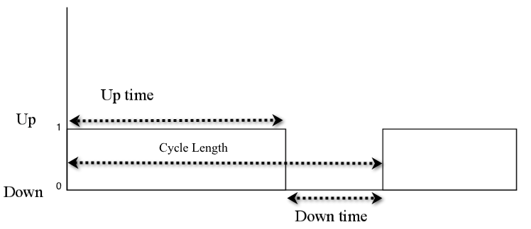
Figure 4.7 illustrates the dynamics of the component over time.
The following steps are useful in developing this model:
- Conceptualize the system/objects and their states
- Determine the events and the actions associated with the events
- Determine how to represent the system and objects as ModelElements
- Determine how to initialize and run the model
The first step is to conceptualize how to model the system and the state of the component. A model element, UpDownComponent, will be used to model the component. To track the state of the component, it is necessary to know whether or not the component is UP or DOWN. A variable can be used to represent this state. However, since we need to estimate the proportion of time that the component is in the UP state, a TWResponse variable will be used. TWResponse is a sub-class of ModelElement that facilitates the observation and statistical collection of time-based variables. Time-bases variables, which are discussed further in the next Chapter, are a type of variable that changes values at particular instants of time. Time-based variables must have time-weighted statistics collected. Time-weighted statistics weight the value of the variable by the proportion of time that the variable is set to a value. To collect statistics on the cycle length we can use a Response. Response is a sub-class of ModelElement that can take on values within a simulation model and allows easy statistical observation of its values during the simulation run. This class provides observation-based statistical collection. Further discussion of observation-based statistics will be presented in subsequent sections.
Because this system is so simple the required performance measures can be easily computed theoretically. According to renewal theory, the probability of being in the UP state in the long run should be equal to:
\[P(UP) = \frac{\theta_{u}}{\theta_{u}+\theta_{d}} = \frac{1.0}{1.0+2.0}=0.\overline{33}\]
where \(\theta_{u}\) is the mean of the up-time distribution and \(\theta_{d}\) is the mean of the down-time distribution. In addition, the expected cycle length should be \(\theta_{u}+\theta_{d} = 3.0\).
The UpDownComponent class extends the ModelElement class and has object references to instances of RandomVariable, TWResponse, Response, and Counter classes. Within the constructor of UpDownComponent, we need to create the instances of these objects for use within the class, as shown in the following code fragment.
class UpDownComponent (parent: ModelElement, name: String? = null) : ModelElement(parent, name) {
companion object {
const val UP = 1.0
const val DOWN = 0.0
}
private val myUpTime: RandomVariable
private val myDownTime: RandomVariable
private val myState: TWResponse
private val myCycleLength: Response
private val myCountFailures: Counter
private val myUpChangeAction = UpChangeAction()
private val myDownChangeAction = DownChangeAction()
private var myTimeLastUp = 0.0
init {
myUpTime = RandomVariable(parent = this, rSource = ExponentialRV(1.0, streamNum = 1), name = "up time")
myDownTime = RandomVariable(parent = this, rSource = ExponentialRV(2.0, streamNum = 2), name = "down time")
myState = TWResponse(this, name = "state")
myCycleLength = Response(this, name = "cycle length")
myCountFailures = Counter(this, name = "count failures")
}Lines 3 and 4 define two constants to represent the up and down states within the companion object. Lines 5-9 declare additional references needed to represent the up and down time random variables and the variables that need statistical collection (myState, myCycleLength, and myCountFailures). Notice how unique names have been provided for the random variables and for the response variables.
Lines 10 and 11 define and create the event actions associated with the end of the up-time and the end of the down time. The variable myTimeLastUp is used to keep track of the time that the component last changed into the UP state, which allows the cycle length to be collected. In lines 20-23, the random variables for the up and downtime are constructed using exponential distributions.
As show in the following code listing, the initialize() method sets up the component.The variable myTimeLastUp is set to 0.0 in order to assume that the last time the component was in the UP state started at time 0.0. Thus, we are assuming that the component starts the simulation in the UP state. Finally, in line 7 the initial event is scheduled to cause the component to go down according to the uptime distribution. This is the first event and then the component can start its regular up and down pattern. In the action associated with the change to the UP state, line 18 sets the state to UP. Line 22 schedules the time until the component goes down. Line 16 causes statistics to be collected on the value of the cycle length. The code time - myTimeLastUp represents the elapsed time since the value of myTimeLastUp was set (in line 20), which represents the cycle length. The DownChangeAction is very similar. Line 31 counts the number of failures (times that the component has gone down). Line 32 sets the state of the component to DOWN and line 34 schedules when the component should next transition into the UP state.
override fun initialize() {
// assume that the component starts in the UP state at time 0.0
myTimeLastUp = 0.0
myState.value = UP
// schedule the time that it goes down
schedule(myDownChangeAction, myUpTime.value)
}
private inner class UpChangeAction : EventAction<Nothing>() {
override fun action(event: KSLEvent<Nothing>) {
// this event action represents what happens when the component goes up
// record the cycle length, the time btw up states
myCycleLength.value = time - myTimeLastUp
// component has just gone up, change its state value
myState.value = UP
// record the time it went up
myTimeLastUp = time
// schedule the down state change after the uptime
schedule(myDownChangeAction, myUpTime.value)
}
}
private inner class DownChangeAction : EventAction<Nothing>() {
override fun action(event: KSLEvent<Nothing>) {
// component has just gone down, change its state value
myCountFailures.increment()
myState.value = DOWN
// schedule when it goes up after the downtime
schedule(myUpChangeAction, myDownTime.value)
}
}The following listing presents the code to construct and execute the simulation. This code is very similar to previously presented code for running a simulation. In line 3, the simulation is constructed. Then, in line 5, the model associated with the simulation is accessed. This model is then used to construct an instance of the UpDownComponent in line 5. Finally, lines 7-12 represent setting up the replication parameters of the simulation, running the simulation, and causing output to be written to the console via a SimulationReporter.
fun main() {
// create the simulation model
val m = Model("UpDownComponent")
// create the model element and attach it to the model
val tv = UpDownComponent(m)
// set the running parameters of the simulation
m.numberOfReplications = 5
m.lengthOfReplication = 5000.0
// tell the simulation model to run
m.simulate()
m.simulationReporter.printAcrossReplicationSummaryStatistics()
}The results for the average time in the up state and the cycle length are consistent with the theoretically computed results.
---------------------------------------------------------
Across Replication Statistical Summary Report
Sat Dec 31 18:31:27 EST 2016
Simulation Results for Model: UpDownComponent_Model
Number of Replications: 30
Length of Warm up period: 0.0
Length of Replications: 5000.0
---------------------------------------------------------
Response Variables
---------------------------------------------------------
Name Average Std. Dev. Count
---------------------------------------------------------
state 0.335537 0.005846 30.000000
cycle length 2.994080 0.040394 30.000000
---------------------------------------------------------
---------------------------------------------------------
Counters
---------------------------------------------------------
Name Average Std. Dev. Count
---------------------------------------------------------
count failures 1670.066667 22.996152 30.000000
---------------------------------------------------------This example only scratches the surface of what is possible. Imagine if there were 20 components. We could easily create 20 instances of the UpDownComponent class and add them to the model. Even more interesting would be to define the state of the system based on which components were in the up state. This would be the beginning of modeling the reliability of a complex system. This type of modeling can be achieved by making the individual model elements (e.g. UpDownComponent) more reusable and allow the modeling objects to interact in complex ways. More complex modeling will be the focus of the next chapter.
4.4.4 Modeling a Simple Queueing System
This section present a simple queueuing system considering of one server with a single waiting line. The logic of this system is essentially the same as that presented in Section 4.3 for the example where we simulated the queue by hand.
Example 4.4 (Drive Through Pharmacy) This example considers a small pharmacy that has a single line for waiting customers and only one pharmacist. Assume that customers arrive at a drive through pharmacy window according to a Poisson distribution with a mean of 10 per hour. The time that it takes the pharmacist to serve the customer is random and data has indicated that the time is well modeled with an exponential distribution with a mean of 3 minutes. Customers who arrive to the pharmacy are served in the order of arrival and enough space is available within the parking area of the adjacent grocery store to accommodate any waiting customers.
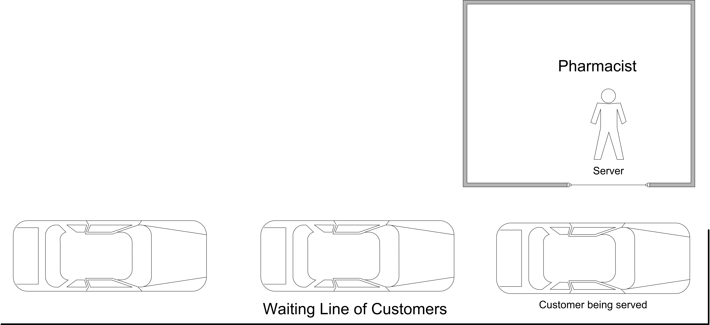
The drive through pharmacy system can be conceptualized as a single server waiting line system, where the server is the pharmacist. An idealized representation of this system is shown in Figure 4.8. If the pharmacist is busy serving a customer, then additional customers will wait in line. In such a situation, management might be interested in how long customers wait in line, before being served by the pharmacist. In addition, management might want to predict if the number of waiting cars will be large. Finally, they might want to estimate the utilization of the pharmacist in order to ensure that he or she is not too busy.
When modeling the system first question to ask is: What is the system? In this situation, the system is the pharmacist and the potential customers as idealized in Figure 4.8. Now you should consider the entities of the system. An entity is a conceptual thing of importance that flows through a system potentially using the resources of the system. Therefore, one of the first questions to ask when developing a model is: What are the entities? In this situation, the entities are the customers that need to use the pharmacy. This is because customers are discrete things that enter the system, flow through the system, and then depart the system.
Since entities often use things as they flow through the system, a natural question is to ask: What are the resources that are used by the entities? A resource is something that is used by the entities and that may constrain the flow of the entities within the system. Another way to think of resources is to think of the things that provide service in the system. In this situation, the entities “use” the pharmacist in order to get their medicine. Thus, the pharmacist is a resource.
Another useful conceptual modeling tool is the activity diagram. An activity is an operation that takes time to complete. An activity is associated with the state of an object over an interval of time. Activities are defined by the occurrence of two events which represent the activity’s beginning time and ending time and mark the entrance and exit of the state associated with the activity. An activity diagram is a pictorial representation of the process (steps of activities) for an entity and its interaction with resources while within the system. If the entity is a temporary entity (i.e. it flows through the system) the activity diagram is called an activity flow diagram. If the entity is permanent (i.e. it remains in the system throughout its life) the activity diagram is called an activity cycle diagram. The notation of an activity diagram is very simple, and can be augmented as needed to explain additional concepts:
Queues: shown as a circle with queue labeled inside
Activities: shown as a rectangle with appropriate label inside
Resources: shown as small circles with resource labeled inside
Lines/arcs: indicating flow (precedence ordering) for engagement of entities in activities or for obtaining resources. Dotted lines are used to indicate the seizing and releasing of resources.
zigzag lines: indicate the creation or destruction of entities
Activity diagrams are especially useful for illustrating how entities interact with resources. In addition, activity diagrams help in finding the events and in identifying some the state changes that must be modeled. Activity diagrams are easy to build by hand and serve as a useful communication mechanism. Since they have a simple set of symbols, it is easy to use an activity diagram to communicate with people who have little simulation background. Activity diagrams are an excellent mechanism to document a conceptual model of the system before building the model.
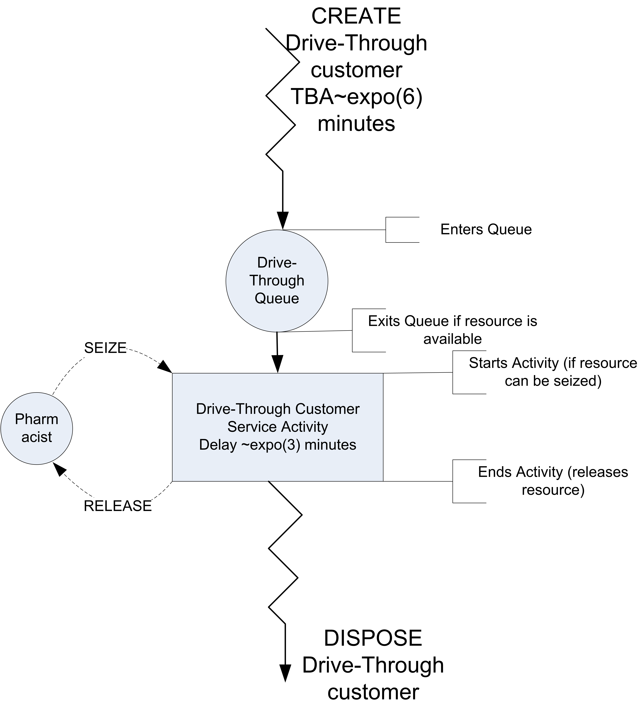
Figure 4.9 shows the activity diagram for the pharmacy situation. The diagram describes the life of an entity within the system. The zigzag lines at the top of the diagram indicate the creation of an entity. Consider following the life of the customer through the pharmacy. Following the direction of the arrows, the customers are first created and then enter the queue. Notice that the diagram clearly shows that there is a queue for the drive-through customers. You should think of the entity flowing through the diagram. As it flows through the queue, the customer attempts to start an activity. In this case, the activity requires a resource. The pharmacist is shown as a resource (circle) next to the rectangle that represents the service activity.
The customer requires the resource in order to start its service activity. This is indicated by the dashed arrow from the pharmacist (resource) to the top of the service activity rectangle. If the customer does not get the resource, they wait in the queue. Once they receive the number of units of the resource requested, they proceed with the activity. The activity represents a delay of time and in this case the resource is used throughout the delay. After the activity is completed, the customer releases the pharmacist (resource). This is indicated by another dashed arrow, with the direction indicating that the units of the resource aare being put back or released. After the customer completes its service activity, the customer leaves the system. This is indicated with the zigzag lines going to no-where and indicating that the object leaves the system and is disposed The conceptual model of this system can be summarized as follows:
System: The system has a pharmacist that acts as a resource, customers that act as entities, and a queue to hold the waiting customers. The state of the system includes the number of customers in the system, in the queue, and in service.
Events: Arrivals of customers to the system, which occur within an inter-event time that is exponentially distributed with a mean of 6 minutes.
Activities: The service time of the customers are exponentially distributed with a mean of 3 minutes.
Conditional delays: A conditional delay occurs when an entity has to wait for a condition to occur in order to proceed. In this system, the customer may have to wait in a queue until the pharmacist becomes available.
With an activity diagram and pseudo-code to represent a solid conceptual understanding of the system, you can begin the model development process.
In the current example, pharmacy customers arrive according to a Poisson process with a mean of \(\lambda\) = 10 per hour. According to probability theory, this implies that the time between arrivals is exponentially distributed with a mean of (1/\(\lambda\)). Thus, for this situation, the mean time between arrivals is 6 minutes.
\[\frac{1}{\lambda} = \frac{\text{1 hour}}{\text{10 customers}} \times \frac{\text{60 minutes}}{\text{1 hour}} = \frac{\text{6 minutes}}{\text{customers}}\]
Let’s assume that the pharmacy is open 24 hours a day, 7 days a week. In other words, it is always open. In addition, assume that the arrival process does not vary with respect to time. Finally, assume that management is interested in understanding the long term behavior of this system in terms of the average waiting time of customers, the average number of customers, and the utilization of the pharmacist.
To simulate this situation over time, you must specify how long to run the model. Ideally, since management is interested in long run performance, you should run the model for an infinite amount of time to get long term performance; however, you probably don’t want to wait that long! For the sake of simplicity, assume that 250 hours (15,000 minutes) of operation is long enough.
The logic of this model follows very closely the discussion of the bank teller example. Let’s define the following variable:
- Let \(t\) represent the current simulation clock time.
- Let \(c\) represent the number of available pharmacists
- Let \(N(t)\) represent the number of customers in the system at any time \(t\).
- Let \(Q(t)\) represent the number of customers waiting in line for the at any time \(t\).
- Let \(B(t)\) represent the number of pharmacists that are busy at any time \(t\).
- Let \(TBA_i\) represent the time between arrivals, which we will assume is exponentially distributed with a mean of 6 minutes.
- Let \(ST_i\) represent the service time of the \(i^{th}\) customer, which we will assume is exponentially distributed with a mean of 3 minutes.
- Let \(E_a\) represent the arrival event.
- Let \(E_s\) represent the end of service event.
- Let \(K\) represent the number of customers processed
Within the KSL model, we will model \(N(t)\), \(Q(t)\), and \(B(t)\) with instances of the TWResponse class The use of the TWResponse class will automate the collection of time averages for these variables as discussed in Section 4.3. Both \(TBA_i\) and \(ST_i\) will be modeled with instances of the RandomVariable class instantiated with instances of the ExponentialRV class. The pseudo-code for this situation is as follows.
Arrival Actions for Event \(E_a\)
N(t) = N(t) + 1
if (B(t) < c)
B(t) = B(t) + 1
schedule E_s at time t + ST_i
else
Q(t) = Q(t) + 1
endif
schedule E_a at time t + TBA_iIn the arrival actions, first we increment the number of customers in the system. Then, the number of busy pharmacists is compared to the number of pharmacists that are available. If there is an available pharmacist, the number of busy pharmacists is incremented and the end of service for the arriving customer is scheduled. If all the pharmacists are busy, then the customer must wait in the queue, which is indicated by incrementing the number in the queue. To continue the arrival process, the arrival of the next customer is scheduled.
End of Service Actions for Event \(E_s\)
B(t) = B(t) - 1
if (Q(t) > 0)
Q(t) = Q(t) - 1
B(t) = B(t) + 1
schedule E_s at time t + ST_i
endif
N(t) = N(t) - 1
K = K + 1In the end of service actions, the number of busy pharmacists is decreased by one because the pharmacist has completed service for the departing customer. Then the queue is checked to see if it has customers. If the queue has customers, then a customer is removed from the queue (decreasing the number in queue) and the number of busy pharmacists is increased by one. In addition, the end of service event is scheduled. Finally, the number of customers in the system is decremented and the count of the total customers processes is incremented.
The following code listing presents the definition of the variables and their creation within the KSL. The drive through pharmacy system is modeled via a class DriveThroughPharmacy that sub-classes from ModelElement to provide the ability to schedule events. The RandomVariable instances myServiceRV and myArrivalRV are used to represent the \(ST_i\) and \(TBA_i\) random variables. \(B(t)\), \(N(t)\), and \(Q(t)\) are modeled with the objects myNumBusy, myNS, and myQ, respectively, all instances of the TWResponse class. The tabulation of the number of processed customers, \(K\), is modeled with a KSL counter, using the Counter class.
class DriveThroughPharmacy(
parent: ModelElement, numServers: Int = 1,
name: String? = null
) : ModelElement(parent, name) {
init{
require(numServers >= 1) {"The number of pharmacists must be >= 1"}
}
var numPharmacists = numServers
set(value) {
require(value >= 1){"The number of pharmacists must be >= 1"}
field = value
}
private val myServiceRV: RandomVariable = RandomVariable(
parent = this,
rSource = ExponentialRV(mean = 0.5, streamNum = 2), name = "ServiceRV"
)
val serviceRV: RandomVariableCIfc
get() = myServiceRV
private val myArrivalRV: RandomVariable = RandomVariable(
parent = this,
rSource = ExponentialRV(1.0, 1), name = "ArrivalRV"
)
val arrivalRV: RandomVariableCIfc
get() = myArrivalRV
private val myNumInQ: TWResponse = TWResponse(parent = this, name = "PharmacyQ")
val numInQ: TWResponseCIfc
get() = myNumInQ
private val myNumBusy: TWResponse = TWResponse(parent = this, name = "NumBusy")
private val myNS: TWResponse = TWResponse(parent = this, name = "# in System")
private val myNumCustomers: Counter = Counter(parent = this, name = "Num Served")
private val myTotal: AggregateTWResponse = AggregateTWResponse(parent = this, name = "aggregate # in system")
private val myArrivalEventAction: ArrivalEventAction = ArrivalEventAction()
private val myEndServiceEventAction: EndServiceEventAction = EndServiceEventAction()
init {
myTotal.observe(myNumInQ)
myTotal.observe(myNumBusy)
}The main constructor of the DriveThroughPharmacy class checks for valid input parameters, instantiates the KSL model elements, and instantiates the arrival and end of service event actions.
As can be seen in the following code, the arrival event is represented by the inner class ArrivalEventAction extending the abstract class EventAction to model the arrival event action. The Kotlin code closely follows the pseudo-code. Notice the use of the initialize() method to schedule the first arrival event. The initialize() method is called just prior to the start of the replication for the simulation. The modeler can think of the initialize() method as being called at time \(t^{-}=0\).
override fun initialize() {
super.initialize()
// start the arrivals
schedule(myArrivalEventAction, myArrivalRV)
}
private inner class ArrivalEventAction : EventAction<Nothing>() {
override fun action(event: KSLEvent<Nothing>) {
myNS.increment() // new customer arrived
if (myNumBusy.value < numPharmacists) { // server available
myNumBusy.increment() // make server busy
// schedule end of service
schedule(myEndServiceEventAction, myServiceRV)
} else {
myNumInQ.increment() // customer must wait
}
// always schedule the next arrival
schedule(myArrivalEventAction, myArrivalRV)
}
}In line 4 the first arrival event is scheduled within the initialize() method. Within the ArrivalEventAction class implementation of the action() method, we see the number of customers in the system incremented, the status of the pharmacists checked, and customers either starting service or having to wait in the queue.
The following code fragment presents the logic associated with the end of service event.
private inner class EndServiceEventAction : EventAction<Nothing>() {
override fun action(event: KSLEvent<Nothing>) {
myNumBusy.decrement() // customer is leaving server is freed
if (myNumInQ.value > 0) { // queue is not empty
myNumInQ.decrement() //remove the next customer
myNumBusy.increment() // make server busy
// schedule end of service
schedule(myEndServiceEventAction, myServiceRV)
}
myNS.decrement() // customer left system
myNumCustomers.increment()
}
}First the number of busy servers is decremented because a pharmacist is becoming idle. Then, the queue is checked to see if it is not empty. If the queue is not empty, then the next customer must be removed, the server made busy again and the customer scheduled into service. Finally, the TWResponse variable, myNS, indicates that a customer has departed the system and the Counter for the number of customers processed is incremented.
The following method can be used to run the model based on a desired number of servers.
fun main() {
val model = Model("Drive Through Pharmacy", autoCSVReports = true)
model.numberOfReplications = 30
model.lengthOfReplication = 20000.0
model.lengthOfReplicationWarmUp = 5000.0
// add DriveThroughPharmacy to the main model
val dtp = DriveThroughPharmacy(model, 1)
dtp.arrivalRV.initialRandomSource = ExponentialRV(6.0, 1)
dtp.serviceRV.initialRandomSource = ExponentialRV(3.0, 2)
model.simulate()
model.print()
}As will be discussed in Chapter 5, this model is really an infinite horizon simulation. We will approximation this infinite horizon with a finite horizon of 250 hours (or 15,000) minutes. The setting of the length of the replication is 20000 with a warm up period (see Chapter 5) of 5000 minutes. This leaves (20,000 - 5,000) = 15,000 minutes for the observations of the simulation. Each replication provides 15000 minutes of observation of the system and the number of replications is specified as 30. That is, we are repeating the observations over 30 independent and identically distributed replications.
The results indicate that the utilization of the pharmacist is about 50%. This means that about 50% of the time the pharmacist was busy. For this type of system, this is probably not a bad utilization, considering that the pharmacist probably has other in-store duties. The reports also indicate that there was less than one customer on average waiting for service.
Name: Drive Through Pharmacy
Last Executive stopping message:
Scheduled end event occurred at time 20000.0
Replication Process Information:
-------------------------------
Iterative Process Name: Model: Replication Process
Beginning Execution Time: 2022-11-29T22:58:06.768592Z
End Execution Time: 2022-11-29T22:58:07.479916Z
Elapsed Execution Time: 711.324ms
Max Allowed Execution Time: Not Specified
Done Flag: true
Has Next: false
Current State: EndedState
Ending Status Indicator: COMPLETED_ALL_STEPS
Stopping Message: Completed all steps.
-------------------------------
Experiment Name: Experiment_1
Experiment ID: 2
Planned number of replications: 30
Replication initialization option: true
Antithetic option: false
Reset start stream option: false
Reset next sub-stream option: true
Number of stream advancements: 0
Planned time horizon for replication: 20000.0
Warm up time period for replication: 5000.0
Maximum allowed replication execution time not specified.
Current Replication Number: 30
-------------------------------
Half-Width Statistical Summary Report - Confidence Level (95.000)%
Name Count Average Half-Width
----------------------------------------------------------------------------------------------------
PharmacyQ 30 0.5025 0.0222
NumBusy 30 0.5035 0.0060
# in System 30 1.0060 0.0271
aggregate # in system 30 1.0060 0.0271
Num Served 30 2513.2667 17.6883
---------------------------------------------------------------------------------------------------- This single server waiting line system is a very common situation in practice. In fact, this exact situation has been studied mathematically through a branch of operations research called queuing theory. For specific modeling situations, formulas for the long term performance of queuing systems can be derived. This particular pharmacy model happens to be an example of an M/M/1 queuing model. The first M stands for Markov arrivals, the second M stands for Markov service times, and the 1 represents a single server. Markov was a famous mathematician who examined the exponential distribution and its properties. According to queuing theory, the expected number of customer in queue, \(L_q\), for the M/M/1 model is:
\[ \begin{aligned} L_q & = \dfrac{\rho^2}{1 - \rho} \\ \rho & = \lambda/\mu \\ \lambda & = \text{arrival rate to queue} \\ \mu & = \text{service rate} \end{aligned} \]
In addition, the expected waiting time in queue is given by \(W_q = L_q/\lambda\). In the pharmacy model, \(\lambda\) = 1/6, i.e. 1 customer every 6 minutes on average, and \(\mu\) = 1/3, i.e. 1 customer every 3 minutes on average. The quantity, \(\rho\), is called the utilization of the server. Using these values in the formulas for \(L_q\) and \(W_q\) results in:
\[\begin{aligned} \rho & = 0.5 \\ L_q & = \dfrac{0.5 \times 0.5}{1 - 0.5} = 0.5 \\ W_q & = \dfrac{0.5}{1/6} = 3 \: \text{minutes}\end{aligned}\]
In comparing these analytical results with the simulation results, you can see that they match to within statistical error. The appendix presents an analytical treatment of queues. These analytical results are available for this special case because the arrival and service distributions are exponential; however, simple analytical results are not available for many common distributions, e.g. lognormal. With simulation, you can easily estimate the above quantities as well as many other performance measures of interest for wide ranging queuing situations. For example, through simulation you can easily estimate the chance that there are 3 or more cars waiting.
4.4.5 More Details About the Pharmacy Model Implementation
There are a few additional concepts to note about the implementation of the pharmacy model. The first set of items to notice is how the random variables and statistical response variables were implemented. In the following code snippet, we see that random variables for the service time and time between arrives were defined using Kotlin private properties. This encapsulates the random variables within the simulation model. However, it can be useful to allow users of the code to have some access to the underlying objects. For this purpose, two public properties serviceRV and arrivalRV were defined.
private val myServiceRV: RandomVariable = RandomVariable(
parent = this,
rSource = ExponentialRV(mean = 0.5, streamNum = 2), name = "ServiceRV"
)
val serviceRV: RandomVariableCIfc
get() = myServiceRV
private val myArrivalRV: RandomVariable = RandomVariable(
parent = this,
rSource = ExponentialRV(1.0, 1), name = "ArrivalRV"
)
val arrivalRV: RandomVariableCIfc
get() = myArrivalRVThese properties return instances of the RandomVariableCIfc interface. This interface limits what can be changed about the underlying random variable. This interface allows the user to change the initial random source associated with the random variable. As noted in the interface comments, this needs to be controlled in such a manner to ensure that each replication starts with the same initial conditions. A naive user may not realize the implications of these changes and thus there are some limitations imposed.
interface RandomVariableCIfc : StreamOptionIfc, IdentityIfc {
/**
* Provides a reference to the underlying source of randomness
* to initialize each replication.
* Controls the underlying source for the RandomVariable. This is the
* source to which each replication will be initialized. This is only used
* when the replication is initialized. Changing the reference has no effect
* during a replication, since the random variable will continue to use
* the reference returned by property randomSource. Please also see the
* discussion in the class documentation.
*
* The initial random source should not be changed while the model is running.
*/
var initialRandomSource: RVariableIfc
fun asString(): String
}Similarly for simulation response variables, there should be controlled access that limits how the properties can be accessed from outside of the model element. In the following code snippet, a private property to track the state of the queue is defined. Since the TWResponse class has public methods and properties that permit the user to change its values, we do not want to fully expose this internal state to outside clients.
private val myNumInQ: TWResponse = TWResponse(parent = this, name = "PharmacyQ")
val numInQ: TWResponseCIfc
get() = myNumInQHowever, it is useful for outside clients to have access to immutable properties and to summary statistics related to the response variable. This is permitted by the use of the TWResponseCIfc interface, which limits access.
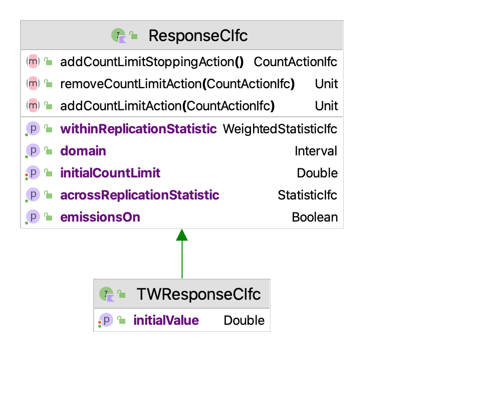
As indicated in Figure 4.10, the two interfaces TWResponseCIfc and ResponseCIfc limit access to time-weighted and tally-based response variables to access within and across replication statistics and to add count actions. Count actions permit actions to take place when the number of observations reaches a particular value. One use of count actions is to stop the simulation when a fixed number of observations have been observed.
Within the implementation, there are a couple of additional items to note. The KSL allows for the definition of aggregate responses. Aggregate responses observe other responses and permit the definition of derived responses. In the pharmacy model implementation, there is an aggregate response called myTotal. The relevant code is shown below.
private val myNumBusy: TWResponse = TWResponse(parent = this, name = "NumBusy")
private val myNS: TWResponse = TWResponse(parent = this, name = "# in System")
private val myNumCustomers: Counter = Counter(parent = this, name = "Num Served")
private val myTotal: AggregateTWResponse = AggregateTWResponse(parent = this, name = "aggregate # in system")
private val myArrivalEventAction: ArrivalEventAction = ArrivalEventAction()
private val myEndServiceEventAction: EndServiceEventAction = EndServiceEventAction()
init {
myTotal.observe(myNumInQ)
myTotal.observe(myNumBusy)
}This code defines an aggregate response that observes two variables, myNumInQ and myNumBusy. Thus, whenever either of these two variables change, the aggregate response is updated to ensure that it represents the total of the two variable. Thus, myTotal represents the total number of customers in the system at any time \(t\). As can be noted in the output results, this response has the same statistics as the response collected directly by the variable myNS labeled “# in System”.
Finally, the implementation has a couple of interesting new items within the main execution method. Notice that in line 1 in the model constructor that the parameter autoCSVReports is set to true. This will cause comma separated value files to be produced in the model’s default output directory that contains all of the within and across replication statistics. In addition, note how the initial random sources for the arrival and service distributions are set in lines 8 and 9. Finally, note the use of model.print(), which causes the default simulation execution information and results to be printed to the console.
fun main() {
val model = Model("Drive Through Pharmacy", autoCSVReports = true)
model.numberOfReplications = 30
model.lengthOfReplication = 20000.0
model.lengthOfReplicationWarmUp = 5000.0
// add DriveThroughPharmacy to the main model
val dtp = DriveThroughPharmacy(model, 1)
dtp.arrivalRV.initialRandomSource = ExponentialRV(6.0, 1)
dtp.serviceRV.initialRandomSource = ExponentialRV(3.0, 2)
model.simulate()
model.print()
}In the next section, we redo the pharmacy model using some new KSL constructs that facilitate the modeling of queues.
4.5 Enhancing the Drive Through Pharmacy Model
In this section, we re-implement the drive through pharmacy model to illustrate a few more KSL constructs.
Example 4.5 (Enhance Drive Through Pharmacy) Consider again the drive through pharmacy situation. Assume that customers arrive at a drive through pharmacy window according to a Poisson distribution with a mean of 10 per hour. The time that it takes the pharmacist to serve the customer is random and data has indicated that the time is well modeled with an exponential distribution with a mean of 3 minutes. Customers who arrive to the pharmacy are served in the order of arrival and enough space is available within the parking area of the adjacent grocery store to accommodate any waiting customers. For this situation, we are interested in estimating the following performance measures:
- Expected time spent waiting in the queue.
- Probability of having 0, 1, 2, 3, etc. in the queue upon arrival.
- The utilization of the pharmacist.
- The number of times that the pharmacist attempted to serve a customer.
- A histogram for the total time spent in the system.
The solution to this situation will involve five new KSL constructs.
SResource- To model the pharmacist as a resource and automatically collect resource statistics.Queue- To model the customer waiting line.QObject- To model the customers and facilitate statistical collection on waiting time in the queue.IntegerFrequencyResponse- To collect statistics on the number of customers waiting when another customer arrives.HistogramResponse- To collect a histogram on the system times of the customers.EventGenerator- To model the arrival pattern of the customers.
The purpose is to cover the basics of these classes for future modeling. The SResource class represents a simple resource that has a unchangeable capacity. The Queue and QObject classes facilitate the holding of entities within waiting lines or queues, while the EventGenerator class codifies the basics of generating events according to a repetitive pattern. We will start by expanding on the concept of a resource.
4.5.1 Modeling a Simple Resource
As we saw in the drive through pharmacy example, when the customer arrives they need the pharmacist in order to proceed. As noted in the activity diagram depicted in Figure 4.9, we denoted the pharmacist as a resource (circle) in the diagram. A resource is something that is needed by the objects (or entities) that experience the system’s activities. In the pharmacy example, the resource (pharmacist) was required to start the service activity, denoted with a arrow with the word “seize” in the activity diagram, pointing from the resource to the start of the activity. After the activity is completed, there is a corresponding arrow labeled “release” pointing from the end of the activity back to the resource. This arrow denotes the returning of the used resource units back to the pool of available units.
For the purposes of this situation, we are going to represent the concept of a simple resource with the aptly named SResource class (for simple resource). Let’s take a look at how the KSL represents a simple resource.
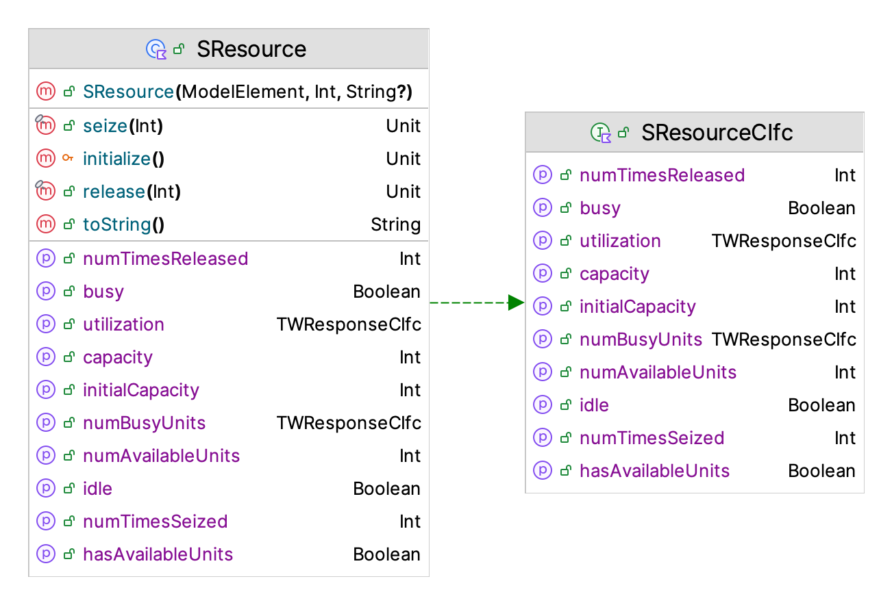
A resource has a capacity that represents the maximum number of units that it can have available at any time. When a resource is seized some amount of units become busy (or allocated). When the units are no longer needed, they are released. If we let \(A(t)\) be the number of available units, \(B(t)\) be the number of busy units and \(c\) be the capacity of the resource, we have that \(c = A(t) + B(t)\) or \(A(t) = c - B(t)\). A resource is considered busy if \(B(t) > 0\). That is, a resource is busy if some units are allocated. A resource is considered idle if no units are busy. That is, \(B(t) = 0\), which implies that \(A(t) = c\).
If the number of available units of a resource are unable to meet the number of units required by a “customer”, then we need to decide what to do. To simplify this modeling, we are going to assume two things 1) customers only request 1 unit of the resource at a time, and 2) if the request cannot be immediately supplied the customer will wait in an associated queue. These latter two assumptions are essentially what we have previously assumed in the modeling of the pharmacy situation. Modeling often requires the use of simplifying assumptions.
The SResource class of Figure 4.11 has functions seize() and release() which take (seize) and return (release) units of the resource. It also has properties (busy and idle) that indicate if the resource is busy or idle, respectively. In addition, the property numBusyUnits represents \(B(t)\) and the property numAvailableUnits represents \(A(t)\). For convenience, the hasAvailableUnits property indicates if the resource has units that can be seized. Finally, the number of times the resource is seized and released are tabulated. The main performance measures are time weighted response variables for tabulating the time-average number of busy units and the time-average instantaneous utilization of the resource. Instantaneous utilization, \(U(t)\) is governed by tracking \(U(t) = B(t)/c\).
4.5.2 Modeling a Queue with Statistical Collection
The Queue class, is used to model waiting lines. The Queue class is a sub-class of ModelElement that is able to hold instances of the class QObject and will automatically collect statistics on the number in the queue and the time spent in the queue.
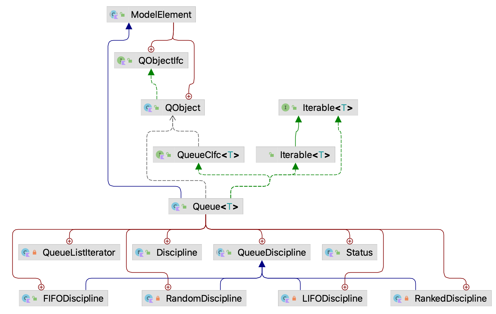
Figure 4.12 illustrates the classes involved when using the Queue and QObject classes. The first thing to note is that QObject is an inner class of ModelElement. This permits subclasses of ModelElement to create instances of QObject that have access to all the architecture of the model but are not model elements. That is, instances of QObject are transitory and are not added to the model element hierarchy that has been previously described. Users create QObject instances, use them to model elements of interest in the system that may experience waiting and then allow the Kotlin garbage collector to deallocate the memory associated with the instances. In Figure 4.12, we also see the class Queue<T: ModelElement.QObject is a sub-class of ModelElement that is parameterized by sub-types of QObject. Thus, users can develop sub-classes fo QObject and still use Queue to hold and collect statistics on those object instances. As noted in the figure, Queue also implements iterable. The last item to notice from Figure 4.12 is that queues can be governed by four basic queue disciplines: FIFO, LIFO, random, and ranked. In the case of a ranked queue, the queue is ordered by the priority property of QObject. The KSL permits the changing of the queue discipline during the simulation. The default queue discipline is FIFO.
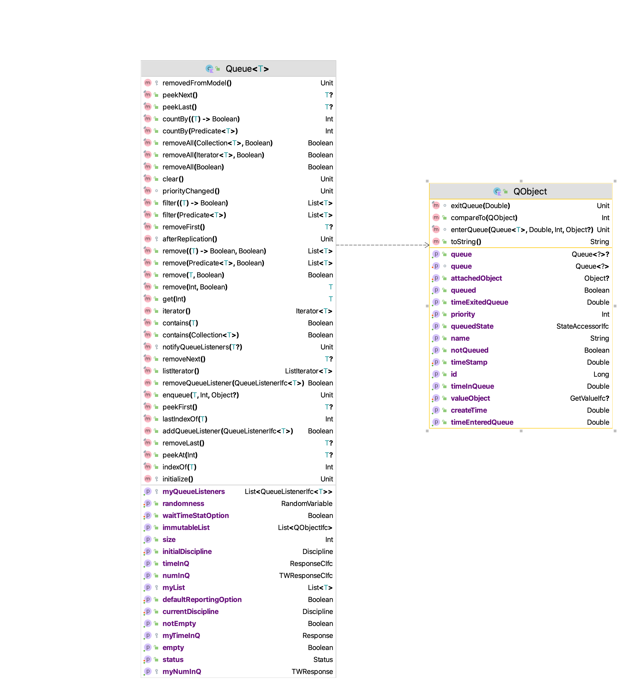
Figure 4.13 presents the properties and methods of the Queue and QObject classes. Here we can see that the Queue class has some standard methods for inserting and removing QObject instances. For the purposes of this chapter, the most noteworthy of these are:
fun enqueue(qObject: T, priority: Int = qObject.priority, obj: Any? = qObject.attachedObject)
fun peekNext(): T?
fun removeNext(): T? The enqueue method places QObject instances into the queue using the supplied priority. It also allows the user to attach an instance of Any to the QObject instance. The peekNext method provides a reference to the next QObject to be removed according the specified queue discipline and the removeNext method will remove the next QObject instance. During the enqueue and removal processes statistics are tabulated on the number of items in the queue and how much time the items spent in the queue. These responses are available via the timeInQ and numInQ properties. We will see how to use these classes within the revised pharmacy model. Before proceeding with reviewing the implementation, let us examine the EventGenerator class.
4.5.3 Modeling a Repeating Event Pattern
The EventGenerator class allows for the periodic generation of events similar to that achieved by “CREATE” modules in other simulation languages. This class works in conjunction with the GeneratorActionIfc interface, which is used to listen and react to the events that are generated by this class. Users of the class can supply an instance of an GeneratorActionIfc to provide the actions that take place when the event occurs. Alternatively, if no GeneratorActionIfc is supplied, by default the generator(event: KSLEvent) method of this class will be called when the event occurs. Thus, sub-classes can simply override this method to provide behavior for when the event occurs. If no instance of an GeneratorActionIfc instance is supplied and the generate() method is not overridden, then the events will still occur; however, no meaningful actions will take place. The key input parameters to the EventGenerator include:
- time until the first event
-
This parameter is specified with an object that implements the
RandomIfc.It should be used to represent a positive real value that represents the time after time 0.0 for the first event to occur. If this parameter is not supplied, then the first event occurs at time 0.0. This parameter is specified by theinitialTimeUntilFirstEventproperty. - time between events
-
This parameter is specified with an object that implements the
RandomIfc.It should be used to represent a positive real value that represents the time between events. If this parameter is not supplied, then the time between events is positive infinity. This parameter is specified by theinitialTimeBetweenEventsproperty. - time until last event
-
This parameter is specified with an object that implements the
RandomIfc.It should be used to represent a positive real value that represents the time that the generator should stop generating. When the generator is created, this variable is used to set the ending time of the generator. Each time an event is to be scheduled the ending time is checked. If the time of the next event is past this time, then the generator is turned off and the event will not be scheduled. The default is positive infinity. This parameter is specified by theinitialEndingTimeproperty. - maximum number of events
-
A value of type long that supplies the maximum number of events to generate. Each time an event is to be scheduled, the maximum number of events is checked. If the maximum has been reached, then the generator is turned off. The default is
Long.MAX_VALUE. This parameter cannot beLong.MAX_VALUEwhen the time until next always returns a value of 0.0. This is specified by theinitialMaximumNumberOfEventsproperty. - the generator action
-
This parameter can be used to supply an instance of
GeneratorActionIfcinterface to supply logic to occur when the event occurs.
The most common use case for an EventGenerator is very similar to a compound Poisson process. The EventGenerator is setup to run with a time between events until the simulation completes; however, there are a number of other possibilities that are facilitated through various methods associated with the EventGenerator class. The first possibility is to sub-class the EventGenerator to make a custom generator for objects of a specific class. To facilitate this the user need only over ride the generate() method that is part of the EventGenerator class. For example, you could design classes to create customers, parts, trucks, demands, etc.
In addition to customization through sub-classes, there are a number of useful methods that are available for controlling the EventGenerator.
turnOffGenerator()-
This method allows an
EventGeneratorto be turned off. The next scheduled generation event will not occur. This method will cancel a previously scheduled generation event if one exists. No future events will be scheduled after turning off the generator. Once the generator has been turned off, it cannot be restarted until the next replication. turnOnGenerator(t: GetValueIfc)-
If the generator was not started upon initialization at the beginning of a replication, then this method can be used to start the generator. The generator will be started \(t\) time units after the call. If this method is used when the generator is already started it does nothing. If this method is used after the generator is done it does nothing. If this method is used after the generator has been suspended it does nothing. In other words, if the generator is already on, this method does nothing.
suspend()-
This method suspends the event generation pattern. The generator is still on, but the generation of events is suspended. The next scheduled generation event is canceled.
resume()-
If the generator is suspended then this method causes the event generator to proceed with the event generation pattern by scheduling a new event according to the time between event distribution.
suspended-
Checks if the generator is suspended.
done-
Checks if the generator has been turned off. The generator can be turned off via the
turnOffGenerator()method or it may turn off when it has reached its time until last event or if the maximum number of events is reached. As previously noted, once a generator has been turned off, it cannot be turned on again within the same replication.
In considering these methods, a generator can turn itself off (as an action) within or caused by the code within its generate()method or in the supplied GeneratorActionIfc interface. It might also suspend() itself in a similar manner. Of course, a class that has a reference to the generator may also turn it off or suspend it. To resume a suspended event generator, it is necessary to schedule an event whose action invokes the resume() method. Obviously, this can be within a sub-class of EventGenerator or within another class that has a reference to the event generator.
4.5.4 Collecting More Detailed Statistics
Example 4.5 also has requirements to collect the probability associated with the number of customers in the queue when a new customer arrives and for collecting a histogram for the time spent in the system for the customers. These requirements will be implemented using the IntegerFrequencyResponse and HistogramResponse classes. The IntegerFrequencyResponse and HistogramResponse classes are implementations of the IntegerFrequency and Histogram classes described in Section 3.1.2. The HistogramResponse class tabulates counts and frequencies of observed data over a set of contiguous intervals. The IntegerFrequencyResponse class will also tabulate count frequencies when the values are only integers. Both of these classes are designed to be used withing a KSL discrete-event simulation. One item to note is that both classes will collect statistics from within a warm up period (see Section 5.6.1). In fact, these classes report statistics based on observations from every replication of the simulation.
4.5.5 Implementing the Enhanced Pharmacy Model
Now we are ready to review the revised implementation of the drive through pharmacy model which puts the previously described classes into action. Only portions of the code are illustrated here. For full details see the example files in the ksl.examples.book.chapter4 package. To declare an instance of the SResource class, the following pattern is recommended:
private val myPharmacists: SResource = SResource(
parent = this,
capacity = numServers,
name = "${this.name}:Pharmacists"
)
val resource: SResourceCIfc
get() = myPharmacistsNotice that the name of the parent model element is used as a prefix for the name of the resource to ensure that the name for the pharmacist is unique. Also note that exposure to useful components of SResource are made possible via the SResourceCIfc interface. Through this interface the initial capacity can be changed, the state of the resource can be accessed, and access to the statistical collection of the number busy and utilization are available.
To collect the histogram and integer frequency statistics, we can use the following declarations.
private val mySysTime: Response = Response(parent = this, name = "${this.name}:SystemTime")
val systemTime: ResponseCIfc
get() = mySysTime
private val mySysTimeHistogram: HistogramResponse = HistogramResponse(theResponse = mySysTime)
val systemTimeHistogram: HistogramIfc
get() = mySysTimeHistogram.histogram
private val myInQ = IntegerFrequencyResponse(parent = this, name = "${this.name}:NQUponArrival")The HistogramResponse class requires an instance of the Response class. In this case, we supply a reference the response that is used to collect the system times for the customers. The reference is used internally to observe the response. The instance of the IntegerFrequencyResponse class will be used within the arrival logic to observe the number of customers in the queue when the customer arrives.
To declare an instance of the Queue class, we use the following code.
private val myWaitingQ: Queue<QObject> = Queue(parent = this, name = "${this.name}:PharmacyQ")
val waitingQ: QueueCIfc<QObject>
get() = myWaitingQNotice how we also declare a public property that exposes part of the queue functionality, especially related to getting access to the statistical responses.
We can create and use an instance of EventGenerator with the following code. We see that the event generator uses a reference to the functional interface GeneratorActionIfc. This is accomplished with the this::arrival syntax, which provides a reference to the arrival function shown in the code.
In addition, the time between arrivals random variable is supplied for both the time until the first event and the time between events. The initialize() method of the EventGenerator class ensures that the first event is scheduled automatically at the start of the simulation. In addition, the EventGenerator class continues rescheduling the arrivals according to the time between arrival pattern. As previously noted, this process can be suspended, resumed, and turned off if needed. An event generator can also be specified not to automatically start at time 0.
private val endServiceEvent = this::endOfService
private val ad = ExponentialRV(1.0, 1)
private val myArrivalGenerator: EventGenerator = EventGenerator(
parent = this, generateAction = this::arrival, timeUntilFirstRV = ad, timeBtwEventsRV = ad
)
val arrivalGenerator: EventGeneratorRVCIfc
get() = myArrivalGenerator
private fun arrival(generator: EventGeneratorIfc) {
myNS.increment() // new customer arrived
myInQ.value = myWaitingQ.numInQ.value.toInt()
val arrivingCustomer = QObject()
myWaitingQ.enqueue(qObject = arrivingCustomer) // enqueue the newly arriving customer
if (myPharmacists.hasAvailableUnits) {
myPharmacists.seize()
val customer: QObject? = myWaitingQ.removeNext() //remove the next customer
// schedule end of service, include the customer as the event's message
schedule(eventAction = endServiceEvent, timeToEvent = myServiceRV, message = customer)
}
}In the code for arrivals, we also see the use of the Queue class (via the variable myWaitingQ) and the QObject class. On line 7 of the code, we see val arrivingCustomer = QObject() which creates an instance of QObject that represents the arriving customer. Then, using the enqueue method the customer is placed within the queue. This action is performed regardless of whether the customer has to wait to ensure that zero wait times are collected. Notice that on line 6, the IntegerFrequencyResponse instance is used to observe the number of customers in the queue upon arrival.
Then, in lines 9-14, we see that the number busy is checked against the number of pharmacists by using the hasAvailableUnits property of the SResource instance. If there are available pharmacists, then a unit of the pharmacist resource is seized, the next customer is removed from the queue, and the customer’s end of service action is scheduled. Notice how the schedule method is different from the previous implementation. In this implementation, the customer is attached to the KSLEvent instance and is held in the calendar with the event until the event is removed from the calendar and its execution commences. Let’s take a look at the revised end of service action.
private fun endOfService(event: KSLEvent<QObject>) {
myPharmacists.release()
if (!myWaitingQ.isEmpty) { // queue is not empty
myPharmacists.seize()
val customer: QObject? = myWaitingQ.removeNext() //remove the next customer
// schedule end of service
schedule(eventAction = endServiceEvent, timeToEvent = myServiceRV, message = customer)
}
departSystem(departingCustomer = event.message!!)
}
private fun departSystem(departingCustomer: QObject) {
mySysTime.value = (time - departingCustomer.createTime)
myNS.decrement() // customer left system
myNumCustomers.increment()
}Here we see the same basic logic as in the previous example, except in this case we can use the resource and the queue. First, a unit of the pharmacist is released. Then, the queue is checked to see if it is empty, if not, a unit of the pharmacist is seized and the next customer is removed. Then, the customer’s service is scheduled. We always handle the departing customer by grabbing it from the message attached to the event via the event.message property. This departing customer is sent to a private method that collects statistics on the customer. Notice two items. First, it is perfectly okay to call other methods from within the event routines. In fact, this is encouraged and can help organize your code.
Secondly, we are passing along the instance of QObject until it is no longer needed. In the departingSystem method, we get the current simulation time via the time property that is available to all model elements. This property represents the current simulation time. We then subtract off the time that the QObject was created by using the createTime property of the departing customer. This is assigned to the value property of an instance of Response called mySystemTime. This causes the system time of every departing customer to be collected and statistics reported. The process of collecting statistics on QObject instances is extremely common and works if you understand how to pass the QObject instance along via the KSLEvent instances.
There is another little tidbit that is occurring in the reference coded snippet. Earlier in the arrivals code snippet, you might not have noticed the following line of code:
private val endServiceEvent = this::endOfServiceFor convenience, this line of code is capturing a functional reference to the endOfService method. The EventActionIfc interface is actually a functional interface, which allows functional references that contain the same signature to be used without having to implement the interface. This feature of Kotlin allows the functional reference to private fun endOfService(event: KSLEvent<QObject>) to serve as a parameter to the schedule() method. This alleviates the need to implement an inner class that extends the EventActionIfc interface. A similar strategy was used for the implementation of GeneratorActionIfc for use in the event generator, except in that case we did not declare a variable to hold the reference to the function. The style that you employ can be based on your own personal preferences.
The results of running the simulation match the previously reported results.
Half-Width Statistical Summary Report - Confidence Level (95.000)%
Name Count Average Half-Width
----------------------------------------------------------------------------
Pharmacy:Pharmacists:NumBusy 30 0.5035 0.0060
Pharmacy:Pharmacists:Util 30 0.5035 0.0060
Pharmacy:NumInSystem 30 1.0060 0.0271
Pharmacy:SystemTime 30 6.0001 0.1441
Pharmacy:PharmacyQ:NumInQ 30 0.5025 0.0222
Pharmacy:PharmacyQ:TimeInQ 30 2.9961 0.1235
SysTime >= 4 minutes 30 0.5136 0.0071
Pharmacy:Pharmacists:SeizeCount 30 2513.4000 17.6653
Pharmacy:NumServed 30 2513.2667 17.6883
----------------------------------------------------------------------------In the results, we see the system time and the queueing time reported. The response called Pharmacy:Pharmacists:SeizeCount reports the number of times that the pharmacist resource was seized. Notice that its value is very close to the number of customers served. The difference is due to the fact that seizing occurs before the service time and the number served is collected when the customer departs. Notice also that the use of the SResource class causes statistics for the number busy and the utilization to be reported. The statistics are exactly the same in this situation because there is only one pharmacist.
We also see a statistic called SysTime > 4.0 minutes. This was captured by using an IndicatorResponse, which is a subclass of Response that allows the user to specify a function that results in boolean expression and an instance of a Response to observe. The expression is collected as a 1.0 for true and 0.0 for false. In this example, we are observing the response called mySysTime.
private val mySTGT4: IndicatorResponse = IndicatorResponse(
predicate = { x -> x >= 4.0 },
observedResponse = mySysTime,
name = "SysTime >= 4 minutes"
)
val probSystemTimeGT4Minutes: ResponseCIfc
get() = mySTGT4This allow a probability to be estimated. In this case, we estimated the probability that a customer’s system time was more than 4.0 minutes.
In addition, the call to the print() function will provide the histogram and integer frequency results in the console.
Pharmacy:SystemTime:Histogram
binNum binLabel binLowerLimit binUpperLimit binCount cumCount proportion cumProportion
0 1 1 [ 0.00, 4.00) 0.0 4.0 48589.0 48589.0 0.485448 0.485448
1 2 2 [ 4.00, 8.00) 4.0 8.0 24974.0 73563.0 0.249513 0.734961
2 3 3 [ 8.00,12.00) 8.0 12.0 12711.0 86274.0 0.126994 0.861956
3 4 4 [12.00,16.00) 12.0 16.0 6658.0 92932.0 0.066519 0.928475
4 5 5 [16.00,20.00) 16.0 20.0 3441.0 96373.0 0.034379 0.962854
5 6 6 [20.00,24.00) 20.0 24.0 1911.0 98284.0 0.019093 0.981946
6 7 7 [24.00,28.00) 24.0 28.0 985.0 99269.0 0.009841 0.991787
7 8 8 [28.00,32.00) 28.0 32.0 458.0 99727.0 0.004576 0.996363
8 9 9 [32.00,36.00) 32.0 36.0 221.0 99948.0 0.002208 0.998571
9 10 10 [36.00,40.00) 36.0 40.0 143.0 100091.0 0.001429 1.000000The integer frequency tabulation shows the number of customers in queue upon the arrival of a new customer. We can see that there is about a 0.75 chance that a customer arrives to an empty queue.
Pharmacy:NQUponArrival
cellLabel value count cum_count proportion cumProportion
0 label: 0 0 74944.0 74944.0 0.747243 0.747243
1 label: 1 1 12615.0 87559.0 0.125780 0.873023
2 label: 2 2 6303.0 93862.0 0.062845 0.935869
3 label: 3 3 3178.0 97040.0 0.031687 0.967555
4 label: 4 4 1581.0 98621.0 0.015764 0.983319
5 label: 5 5 765.0 99386.0 0.007628 0.990947
6 label: 6 6 417.0 99803.0 0.004158 0.995104
7 label: 7 7 235.0 100038.0 0.002343 0.997448
8 label: 8 8 136.0 100174.0 0.001356 0.998804
9 label: 9 9 72.0 100246.0 0.000718 0.999521
10 label: 10 10 27.0 100273.0 0.000269 0.999791
11 label: 11 11 13.0 100286.0 0.000130 0.999920
12 label: 12 12 5.0 100291.0 0.000050 0.999970
13 label: 13 13 3.0 100294.0 0.000030 1.000000The IntegerFrequencyResponse and HistogramResponse also facilitate the plotting of their results. See the documentation for further details.
4.6 More Drive Through Fun
Many fast food franchises have configured their restaurants such that customers using the drive through option first place an order at an ordering station and then pickup and pay at following station. This situation is called a tandem queueing system as illustrated in Figure 4.14. This section presents KSL constructs that facilitate the modeling of simple queueing situations, like that faced by fast food drive through lines.
A tandem queue is a sequence of queues that must be visited (in order) to receive service from resources. The following example presents an illustrative situation.
Example 4.6 (Tandem Queueing System) Suppose a service facility consists of two stations in series (tandem), each with its own FIFO queue. Each station consists of a queue and a single server. A customer completing service at station 1 proceeds to station 2, while a customer completing service at station 2 leaves the facility. Assume that the inter-arrival times of customers to station 1 are IID exponential random variables with a mean of 6 minutes. Service times of customers at station 1 are exponential random variables with a mean of 4 minute, and at station 2 are exponential random variables with mean 3 minute. Develop an model for this system. Run the simulation for 30 replications of 20000 minutes, with a warm up period of 5000 minutes. Estimate for each station the expected average delay in queue for the customer, the expected time-average number of customers in queue, and the expected utilization. In addition, estimate the average number of customers in the system and the average time spent in the system.
The first thing to note about this situation is that the system consists of two very similar components: station 1 and station 2. The second thing to note is that the same types of events occur for each of the two components. That is, there are arrival and departure events for each station. The state change logic for the arrival and departure events is exactly the same as we saw for the pharmacy situation:
Arrival Actions for Event \(E_a\)
N(t) = N(t) + 1
if (B(t) < c)
B(t) = B(t) + 1
schedule E_s at time t + ST_i
else
Q(t) = Q(t) + 1
endif
schedule E_a at time t + TBA_iWe increase the number in the system \(N(t)\) by 1 and check if the number of busy servers \(B(t)\) is less than the capacity \(c\). If so, we start the customer into service; otherwise, we place the customer in the queue.
End of Service Actions for Event \(E_s\)
B(t) = B(t) - 1
if (Q(t) > 0)
Q(t) = Q(t) - 1
B(t) = B(t) + 1
schedule E_s at time t + ST_i
endif
N(t) = N(t) - 1The end of service actions are as previously seen. There is one less server busy and if the queue has customers, it is processed and the customer’s service starts. Since the same logic will need to be implemented for each station, it makes sense from an object-oriented perspective, to conceptualize a class that encapsulates the data and behavior to represent this situation.
Figure 4.14 should give an idea of what the class should represent. In the figure, there are two stations with each station containing a queue and a server (or resource). Thus, we should build a class that models a single queue that holds objects that must wait for a server to be available. We are going to call this thing a SingleQStation. Notice that the input to the first station is a customer from some arrival process and that the input to the second station is a customer departing the first station. Thus, the main difference between how these components act is where they receive customers from and where they send completed customers. Notice that a station needs to know where to send its completed customers. What else does a station need to know in order to process the customers? The station will need to know how many servers are available at the station and will need to know how to determine the processing time for the customers. For this modeling, we need to combine the concepts of a resource and a queue as a model element component. Let’s put the resource together with a queue to get a station for processing in the SingleQStation class.
4.6.1 Modeling a Resource with a Waiting Line
The SingleQStation class will use an instance of the SResource class to represent its resource. In addition, the SingleQStation class will use an instance of the Queue class presented in the previous section to represent the waiting line for the customers that need to wait for their requested units of the resource. The customers that use the single queue station will be represented by instances of the QObject class. We are now ready to put most of these pieces together to construct the SingleQStation class. Once we have an understanding of the SingleQStation class, we will be ready to model Example 4.6.
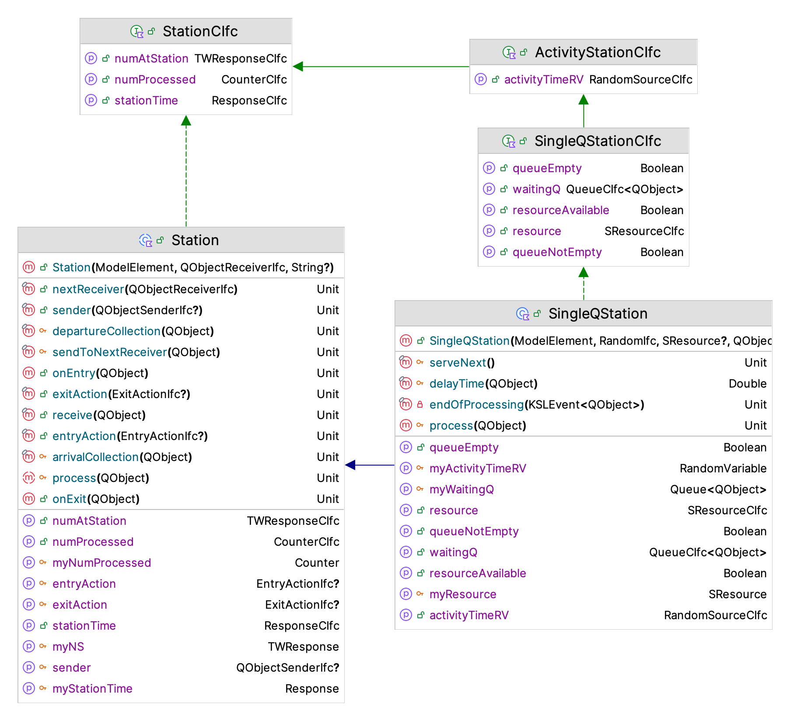
Let’s start with an overview of the functionality of the SingleQStation class and then review the code implementation. Figure 4.15 presents the constructor, functions, and properties of the SingleQStation class. The main item to note about the constructor is that it can take in an instance of the SResource class. The second thing to note is that instances can process instances of the QObject class via the process() function. The process() function represents the actions that should occur when something arrives to the station. The endOfProcessing() function represents what should happen when the processing is completed. That is, the process() function is the “arrival event” and the endOfProcessing() function is the “departure event”. Let’s look at the code.
The logic of the process() function should look very familiar. Just as was done in previous examples, the arriving customer immediately enters the queue. Then, if the resource is available, the next customer is placed into service.
/**
* Receives the qObject instance for processing. Handle the queuing
* if the resource is not available and begins service for the next customer.
*/
override fun process(arrivingQObject: QObject) {
// enqueue the newly arriving qObject
myWaitingQ.enqueue(arrivingQObject)
if (isResourceAvailable) {
serveNext()
}
}The serveNext() function removes the next customer from the queue, seizes the resource, and schedules the end of processing event for the customer. Notice that the customer starting service is attached to the event. Note that the purpose of the delayTime() function is to determine the processing time for the customer when using the resource. There are two default options available. The delay can be supplied from the QObject instance via the valueObject property. If attached to the QObject instance the valueObject property returns something that returns a Double value. This value can be used for anything you want it to represent. In this case, it can be used to supply a delay time. The second option is to use the processing time that was specified for the station if the value object is not attached to the QObject instance.
/**
* Called to determine which waiting QObject will be served next Determines
* the next customer, seizes the resource, and schedules the end of the
* service.
*/
protected fun serveNext() {
//remove the next customer
val nextCustomer = myWaitingQ.removeNext()!!
myResource.seize()
// schedule end of service, if the customer can supply a value,
// use it otherwise use the processing time RV
schedule(this::endOfProcessing, delayTime(nextCustomer), nextCustomer)
}
/**
* Could be overridden to supply different approach for determining the service delay
*/
protected fun delayTime(qObject: QObject) : Double {
return qObject.valueObject?.value ?: myActivityTimeRV.value
}As mentioned, the endOfProcessing() function represents the logic that should occur after the customer completes its use of the resource for the processing time. In the following code, first the customer completing service is grabbed from the event’s message. After releasing the resource, the queue is checked and if it is not empty the next customer is started into service. Then, the leaving customer exits the station and is sent to the next location. The function sendToNextReceiver() will be discussed further within the context of the example.
/**
* The end of processing event actions. Collect departing statistics and send the qObject
* to its next receiver. If the queue is not empty, continue processing the next qObject.
*/
private fun endOfProcessing(event: KSLEvent<QObject>) {
val leaving: QObject = event.message!!
myResource.release()
if (isQueueNotEmpty) { // queue is not empty
serveNext()
}
sendToNextReceiver(leaving)
}There is a lot more happening within the SingleQStation class than presented here. As you can see from Figure 4.15, the SingleQStation class inherits from the Station class, which is an abstract base class. The Station class ensures that statistics that are common to all station types are collected. In addition, the Station class provides for the attachment of functions that may be executed when something arrives to the station and also when something departs. Such entry and exit actions provide users the ability to add behavior to a station without having to use inheritance via the use of Kotlin lambda functions. Entry and exit actions are represented by single abstract method (SAM) via the EntryActionIfc and ExitActionIfc interfaces. Lambda expressions can be attached to a station to effect useful logic.
We now have a new KSL class that can be used to model many different situations (like the drive through pharmacy) that involve the use of resources and waiting lines. Let’s continue this by implementing the model for Example 4.6. This will motivate how to send and receive QObject instances.
4.6.2 Modeling the Tandem Queue of Example 4.6
The main concepts needed to put the pieces together to represent the tandem queue described in Example 4.6 are now modeled. The main remaining concept needed is how to send and receive customers within such systems. Since this is a very common requirement, the KSL provides basic functionality to help with this modeling task. Two new KSL constructs will be introduced and then used within the implementation of the tandem queue model. The first is an interface that promises to allow the receiving of QObject instances: the QObjectReceiverIfc interface.
fun interface QObjectReceiverIfc {
fun receive(qObject: ModelElement.QObject)
}Note that the QObjectReceiverIfc interface is SAM functional interface. Classes that implement the QObjectReceiverIfc interface promise to have a receive() function. The idea is to have a defined protocol for system components that will do something with the received QObject instance. As you may now realize, the SingleQStation class implements the QObjectReceiverIfc interface via its inheritance from the Station class. As shown in the following code, the SingleQStation class extends the Station class, which implements the QObjectReceiverIfc interface.
open class SingleQStation(
parent: ModelElement,
activityTime: RVariableIfc = ConstantRV.ZERO,
resource: SResource? = null,
nextReceiver: QObjectReceiverIfc = NotImplementedReceiver,
name: String? = null
) : Station(parent, nextReceiver, name = name), SingleQStationCIfc {
...
}Figure 4.16 presents the major classes and interfaces of the ksl.modeling.station package. Central to the functionality is the Station class and the QObjectReceiverIfc interface.
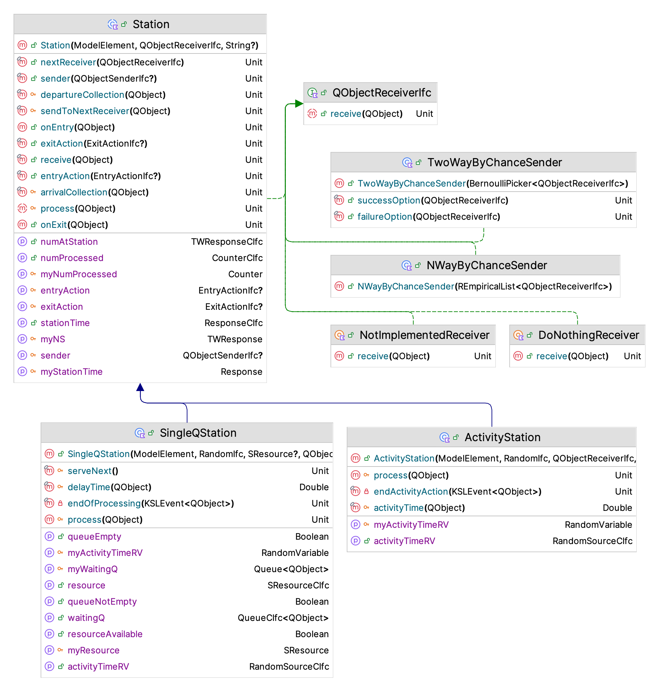
The QObjectReceiverIfc interface defines a protocol for receiving QObject instances and the Station class provides default functionality for receiving an arriving QObject instance and for sending a completed QObject instance to its next location. Reviewing the Station class’s code is useful to understanding how this works. The Station class is an abstract class that provides the sendToNextReceiver() function.
abstract class Station(
parent: ModelElement,
private var nextReceiver: QObjectReceiverIfc = NotImplementedReceiver,
name: String? = null
) : ModelElement(parent, name), QObjectReceiverIfc, StationCIfc {
/**
* Sets the receiver of qObject instances from this station
*/
fun nextReceiver(receiver: QObjectReceiverIfc) {
nextReceiver = receiver
}
.
.
protected fun sendToNextReceiver(completedQObject: QObject) {
departureCollection(completedQObject)
exitAction?.onExit(completedQObject)
onExit(completedQObject)
if (sender != null) {
sender!!.send(completedQObject)
} else {
if (completedQObject.sender != null) {
completedQObject.sender!!.send(completedQObject)
} else {
nextReceiver.receive(completedQObject)
}
}
}
/**
* Can be used to supply a sender that will be used instead of
* the default behavior. The default behavior uses a sender attached
* to the QObject instance and if not attached will send the QObject
* to the next receiver.
*/
fun sender(sender: QObjectSenderIfc?) {
this.sender = sender
}There are three mechanisms for determining where to send the departing QObject instance. The first mechanism allows the user to attach a QObjectSenderIfc instance via the sender() function. As you can see from the code, if this mechanism is supplied, then it is used to send the completed QObject instance somewhere (i.e. to some receiver). If this first mechanism is not supplied, then the station looks to see if the completed QObject instance has a specified sender. If it does, then the QObject instance’s sender is used for sending. Every QObject has an (optional) property called sender that (if set) should return an instance of a QObjectSenderIfc interface.
/**
* A functional interface that promises to send. Within the
* context of qObjects a sender should cause a qObject
* to be (eventually) received by a receiver.
*/
fun interface QObjectSenderIfc {
fun send(qObject: ModelElement.QObject)
}The idea is that the sender will know how to send its related QObject instance to a suitable receiver. Thus, complex routing logic could be attached to the QObject instance. The sendToNextReceiver() function checks to see if the the QObject instance has a sender to assist with its routing. If it does, the sender is used to get the next location and then sends the QObject instance to the location by telling the location to receive the object. If the sender is not present, then the nextReceiver property is used to send the QObject instance to the specified receiver. The receiver’s behavior determines what happens to the QObject instance next.
The final approach supplies the destination (receiver) as part of the creation of the station instance. Notice that the Station class takes in a parameter called nextReceiver which represents an object that implements the QObjectReceiverIfc interface. This parameter can be used to specify where the departing QObject instance should be sent. That is, the next object that should receive the departing object. The default value for this parameter is the NotImplementedReceiver object. This object will throw a not implemented yet exception if you do not replace it with something that models the situation. You need to replace the default NotImplementedReceiver object only if one of the other two mechanisms are not being used by the station.
Note
As you will soon see in the following example, creating a station without specifying a receiver can be very convenient. This is why the NotImplementedReceiver object is the default. However, if you forget to set the receiver to something useful or do not use one of the other mechanisms, you will get the not implemented yet error.
The approach of specifying the receivers to visit allows for the modeling of very complex systems by simply “hooking” up the object instances in the correct order. We can now illustrate this with the implementation of the example.
The following code presents the class constructor for the TandemQueue class. The class takes in the random variables need for the arrival and two service processes. Then, because of the requirement to report the total system time and the total number of customers in the system, we have standard definitions for time-weighted response variables and a counter. This is very similar to how we defined the pharmacy system.
class TandemQueue(
parent: ModelElement,
name: String? = null
) : ModelElement(parent, name) {
private val myNS: TWResponse = TWResponse(parent = this, name = "${this.name}:NS")
val numInSystem: TWResponseCIfc
get() = myNS
private val mySysTime: Response = Response(parent = this, name = "${this.name}:TotalSystemTime")
val totalSystemTime: ResponseCIfc
get() = mySysTime
private val myNumProcessed: Counter = Counter(parent = this, name = "${this.name}:TotalProcessed")
val totalProcessed: CounterCIfc
get() = myNumProcessed
...Now, the real magic of the station package can be used. The following code represents the rest of the implementation of the tandem queue system. The code uses an EventGenerator instance to model the arrival process to the first station. Then, two instances of the SingleQStation class are created to represent the first and second station in the system. Notice the implementation of the init{} block. The nextReceiver property for station 1 is set to be the second station and the nextReceiver property for station 2 is set to an instance of the ExitSystem inner class. This approach relies on replacing the default NotImplementedReceiver receiver. Notice that if you did not rely on this default, you would need to create the stations (receivers) in the reverse order so that you could supply the correct receiver within the station’s constructor. The init{} block would not be necessary with that approach.
private val ad = ExponentialRV(6.0, 1)
private val myArrivalGenerator: EventGenerator = EventGenerator(
parent = this,
generateAction = this::arrivalEvent, timeUntilFirstRV = ad, timeBtwEventsRV = ad
)
private val myStation1: SingleQStation = SingleQStation(
parent = this,
activityTime = ExponentialRV(4.0, 2),
name = "${this.name}:Station1"
)
val station1: SingleQStationCIfc
get() = myStation1
private val myStation2: SingleQStation = SingleQStation(
parent = this,
activityTime = ExponentialRV(3.0, 3),
name = "${this.name}:Station2"
)
val station2: SingleQStationCIfc
get() = myStation2
init {
myStation1.nextReceiver(myStation2)
myStation2.nextReceiver(ExitSystem())
}
private fun arrivalEvent(generator: EventGeneratorIfc) {
val customer = QObject()
myNS.increment()
myStation1.receive(customer)
}
private inner class ExitSystem : QObjectReceiverIfc {
override fun receive(arrivingQObject: QObject) {
mySysTime.value = time - arrivingQObject.createTime
myNumProcessed.increment()
myNS.decrement()
}
}
}The arrival process shown in the arrivalEvent() function creates the arriving customer, increments the number in the system, and tells station 1 to receive the customer. This will set off a series of events which will occur within the SingleQStation instances that eventually result in the customer being received by the ExitSystem instance. The ExitSystem instance is used to collect statistics on the departing customer. The modeling involves hooking up the system components so that they work together to process the customers. This creation and use of objects in this manner is a hallmark of object-oriented programming. The following code can be used to simulate the system.
fun main(){
val sim = Model("TandemQ Model")
sim.numberOfReplications = 30
sim.lengthOfReplication = 20000.0
sim.lengthOfReplicationWarmUp = 5000.0
val tq = TandemQueue(sim, name = "TandemQ")
sim.simulate()
sim.print()
}The results from running the following code are not very interesting except for noticing the number of statistics that are are automatically captured within the output. Notice for example that the resources automatically report the average number of busy units and the utilization of the resource. In addition, stations automatically report the total time spent at a station, the number of objects at the station, and the number completed by the station.
Statistical Summary Report
| Name | Count | Average | Half-Width |
|---|---|---|---|
| TandemQ:NS | 30 | 3.04 | 0.093 |
| TandemQ:TotalSystemTime | 30 | 18.132 | 0.5 |
| TandemQ:Station1:R:NumBusy | 30 | 0.671 | 0.008 |
| TandemQ:Station1:R:Util | 30 | 0.671 | 0.008 |
| TandemQ:Station1:NS | 30 | 2.031 | 0.088 |
| TandemQ:Station1:StationTime | 30 | 12.107 | 0.483 |
| TandemQ:Station1:Q:NumInQ | 30 | 1.359 | 0.081 |
| TandemQ:Station1:Q:TimeInQ | 30 | 8.101 | 0.457 |
| TandemQ:Station2:R:NumBusy | 30 | 0.5 | 0.004 |
| TandemQ:Station2:R:Util | 30 | 0.5 | 0.004 |
| TandemQ:Station2:NS | 30 | 1.01 | 0.023 |
| TandemQ:Station2:StationTime | 30 | 6.029 | 0.135 |
| TandemQ:Station2:Q:NumInQ | 30 | 0.51 | 0.02 |
| TandemQ:Station2:Q:TimeInQ | 30 | 3.042 | 0.12 |
| TandemQ:TotalProcessed | 30 | 2512.667 | 17.41 |
| TandemQ:Station1:NumProcessed | 30 | 2512.7 | 17.535 |
| TandemQ:Station2:NumProcessed | 30 | 2512.667 | 17.41 |
Example 4.7 (Tandem Queueing System with Dependent Service Times) Reconsider Example 4.6 with the following variation. Suppose that there are two types of parts A and B. The time that it takes to process the parts at the first station depends on the type of part. Part A parts have an exponential service time with a mean of 2.0 minutes (stream 2). Part B parts have an exponential service time with a mean of 6.0 minutes (stream 2). Suppose that data indicates that 40 percent of the parts that arrive are of type A (stream 4). Revise the solution for Example 4.6 to account for the service time at station 1 being dependent upon the type of part.
This situation can be modeled by specifying that station 1 use the processing QObject instances to determine the activity time at the station. This can be accomplished by setting the useQObjectForActivityTime property of the SingleQStation class to true. This setting will cause the station to attempt to use the valueObject property of the QObject instances to determine the activity time. The valueObject property should hold an instance of an object that implements the GetValueIfc interface. Since the RandomVariable class implements this interface, it is a simple matter to assign the valueObject property when the QObject is created. The following code illustrates the solution.
private val myStation1: SingleQStation = SingleQStation(
parent = this,
name = "${this.name}:Station1"
)
val station1: SingleQStationCIfc
get() = myStation1
private val myStation2: SingleQStation = SingleQStation(
parent = this,
activityTime = ExponentialRV(3.0, 3),
name = "${this.name}:Station2"
)
val station2: SingleQStationCIfc
get() = myStation2
init {
myStation1.useQObjectForActivityTime = true
myStation1.nextReceiver(myStation2)
myStation2.nextReceiver(ExitSystem())
}
private val myPartType = RandomVariable(this, BernoulliRV(0.4, 4))
private val myPartTypeAServiceRV = RandomVariable(this, ExponentialRV(4.0, 2))
private val myPartTypeBServiceRV = RandomVariable(this, ExponentialRV(6.0, 2))
private fun arrivalEvent(generator: EventGeneratorIfc) {
val customer = QObject()
if (myPartType.value == 1.0) {
customer.valueObject = myPartTypeAServiceRV
} else {
customer.valueObject = myPartTypeBServiceRV
}
myNS.increment()
myStation1.receive(customer)
}The first thing to notice is that the declaration for station 1 does not have its activity time provided. In this case, the activity time defaults to 0.0. Next, the init block has been updated such that station one’s useQObjectForActivityTime is set to true. This is followed by definitions for the random variables. Here the determination of the type of part is specified with a Bernoulli random variable. Finally, in the arrival event for the parts, the type of part is randomly determined and the valueObject property of the QObject instance is assigned to correct random variable based on the type. The underlying logic that handles the determination of the activity time for station 1 will now randomly generate a value using the random variable that was assigned to the valueObject property. Thus, the service time at station 1 will depend upon the part type. Similar strategies can be implemented for any station. The tricky aspect is the reassignment of the valueObject property before the queue object is sent to the next station. This might be accomplished by using lambda functions assigned to the entry or exit actions for the station as mentioned in Section 4.6.1.
4.6.3 Modeling with the Station Package
The ksl.modeling.station package has many options that can be utilized to model complex situations. This section discusses some of the options and offers some reasons and strategies for their application.
Imagine if the tandem queue system consisted of 100 stations. How might you model that situation? You would need to make 100 instances of the SingleQStation class. This could easily be accomplished in a for-loop which captures the instances into a list of stations. Then, the list could be iterated to assign the nextReceiver property of the station. That is, iterate the list and assign each station’s receiver to the next element in the list. This approach builds on the notion of directly connecting the receivers as illustrated in the tandem queue example. However, there may be better approaches.
A better approach is to use the sending option that is attached to the QObject instance when the instance is created and let every created QObject instance follow their own sequence through the system. This can be accomplished by using an instance of the ReceiverSequence class.
The ReceiverSequence class sub-classes from the QObjectSender class. As previously mentioned senders implement the QObjectSenderIfc interface. That is, they know how or where to send the QObject instance. The main variation between senders is the selection of the next QObjectReceiverIfc instance to receive the QObject instance. The QObjectSender class is an abstract base class that requires the implementation of the selectNextReceiver() function.
abstract class QObjectSender() : QObjectSenderIfc {
/**
* Can be used to supply logic if the iterator does not have
* more receivers.
*/
private var noNextReceiverHandler: ((ModelElement.QObject) -> Unit)? = null
fun noNextReceiverHandler(fn: ((ModelElement.QObject) -> Unit)?){
noNextReceiverHandler = fn
}
abstract fun selectNextReceiver(): QObjectReceiverIfc?
final override fun send(qObject: ModelElement.QObject) {
val selected = selectNextReceiver()
if (selected != null) {
beforeSendingAction?.action(selected, qObject)
selected.receive(qObject)
afterSendingAction?.action(selected, qObject)
} else {
noNextReceiverHandler?.invoke(qObject)
}
}
private var beforeSendingAction: SendingActionIfc? = null
fun beforeSendingAction(action : SendingActionIfc){
beforeSendingAction = action
}
private var afterSendingAction: SendingActionIfc? = null
fun afterSendingAction(action : SendingActionIfc){
afterSendingAction = action
}
}The QObjectSender class defines how QObject instances will be sent and allows for the handling of a receiver not being selected. In addition, you can use lambda expressions to add actions prior to and after sending the QObject instance. Let’s review the implementation of the ReceiverSequence class.
class ReceiverSequence(
private val receiverItr: ListIterator<QObjectReceiverIfc>
) : QObjectSender() {
override fun selectNextReceiver(): QObjectReceiverIfc? {
return if (receiverItr.hasNext()){
receiverItr.next()
} else {
null
}
}
}As can be seen in the code for the ReceiverSequence class, a list iterator is used and checked. If the next receiver is found, it is returned and the QObject instance will be sent to the receiver. So imagine that you have a list of QObjectReceiverIfc instances, in a list called stations, then the following code could be implemented to assign the sequence to the QObject instance when it is created.
private fun arrivalEvent(generator: EventGenerator){
val itr = stations.listIterator()
val customer = QObject()
customer.sender = ReceiverSequence(itr)
customer.sender.send(customer)
}The sender will cause the customer to go to the first receiver presented by the iterator and then after that each station will automatically cause the customer to continue using the iterator until there are no more receivers. The trick is handling the last receiver, which could easily be a receiver like the ExitSystem receiver used in the tandem queue implementation that does not cause further use of the iterator. This approach is very flexible. For example, imagine different types of customers being assigned different iterators (based on different lists of stations). The approach would allow stations to be visited multiple times, skipped, etc. all based on the ordering of stations in a list and the resulting iterators from those lists.
As previously mentioned, there are actually 3 mechanisms (or options) for sending QObject instances: 1) directly specifying a receiver (illustrated in the tandem queue model), 2) attaching a sender to the QObject instance (discussed in this section), and 3) specifying a sender for the station. We have already discussed options 1 and 2. For option 3, while it is possible that every station may have its own unique instance of a sender (i.e. a QObjectSenderIfc instance), a more plausible approach would be that the stations share a global sender. In this approach you simply defer the sending functionality to some complex object at the system level that determines where to send the QObject instance next. Since system control logic may take into account the entire state of the system in order to optimally route the workload among the stations, this approach seems extremely useful.
In reviewing Figure 4.16 you may also notice the ActivityStation, the TwoWayByChanceSender, and NWayByChanceSender classes. The ActivityStation class models a station that does not have a resource by implementing a simple scheduled delay for a specified activity time. The TwoWayByChanceSender class provides probabilistic routing between two specified receivers according to a Bernoulli random variable. The NWayByChanceSender class provides probabilistic routing from a list of receivers according to a discrete empirical distribution. The TwoWayByChanceSender and NWayByChanceSender classes are special in that they behave as both senders and receivers of QObject instances. That is, they implement both the QObjectReceiverIfc interface and the QObjectSenderIfc interface. Essentially, their receiving action is to immediately execute the sending action. This dual behavior allows them to be used in any of the three options for sending QObject instances.
As one final point of discussion, the ability to attach Kotlin lambda expressions within the stations package should not be under appreciated. Let’s suppose you were simulating a system where parts might need to repeatedly visit a particular station and you wanted to count the number of times that the part visited the station in order to invoke control logic based on the count. How might you model this situation using stations? The first task would be to subclass QObject to have a sub-type that had an attribute to hold the visit count.
private inner class Part(var visitCount: Int = 0) : QObject()Now, suppose the station for which we wanted to track the visits was the drilling station (called drilling). Then, when setting up the initialization logic within the init{} block we can attach a lambda expression to the drilling station and ensure that every time that the station is visited, the part increments the visitation count. The code might look something like this:
init {
myArrivalGenerator.generatorAction { drilling.receive(Part()) }
drilling.exitAction { (it as Part).visitCount++ }
drilling.nextReceiver(grinding)
// etc.
grinding.nextReceiver(exit)
}Since the GeneratorActionIfc is a SAM functional interface, the code takes advantage of this by supplying the generation logic as a lambda expression. In addition, the exit action for the drilling station is specified as a lambda expression. In this case, the reference object of the lambda is cast to an instance of the Part class and then the visit count attribute is incremented. This code illustrates a single line lambda; however, there is no limitation on the number of lines of the lambda expression. Also, if you do not like lambda expressions, you can simply make an inner class that implements the ExitActionIfc interface and use the syntax which best matches your programming style.
Using these constructs, the KSL can model very large and complex queueing situations using the relatively simple framework provided by the ksl.modeling.station package. The next chapter will present many ways in which you can capture and use the simulation results to make decisions based on the statistical results.
4.7 Summary
This chapter introduced how to model discrete event dynamic systems using the KSL. The KSL facilitates the model building process, the model running process, and the output analysis process.
The main model elements covered included:
Model: Used to hold all model elements. Automatically created by the Simulation class. Used to create and control the execution of the model.
ModelElement: Used as an abstract base class for creating new model elements for a simulation.
RandomVariable: A sub-class of ModelElement used to model randomness within a simulation.
Response: A sub-class of ModelElement used to collect statistics on observation-based variables.
TWResponse: A sub-class of Response used to collect statistics on time-weighted variables in the model.
Counter: A sub-class of ModelElement used to count occurrences and collect statistics.
IndicatorResponse: A sub-class of Response used to collect on boolean expressions by observing another response.
AggregateTWResponse: A sub-class of TWResponse used to collect time weighted statistics by observing other TWResponse instances.
SimulationReporter: Used to gather and report statistics on a simulation model.
KSLEvent: Used to model different events scheduled in time during a simulation.
EventActionIfc: An interface used to define an action() method that represents event logic within the simulation.
Queue: A sub-class of ModelElement that holds instances of the class QObject and will automatically collect statistics on the number in the queue and the time spent in the queue.
EventGenerator: A subclass of ModelElement that facilitates the repeated generation of events.
GeneratorActionIfc: An interface used to implement the actions associated with event generators.
SResource: A simple resource that has 1 or more units that represent its capacity. The units can be seized and released. Statistics on the utilization and number of busy units are automatically reported.
SingleQStation: A station that has a single waiting line for customers to wait in when its associated resource does not have available units. Statistics on time spent at the station, number of customers at the station, and number of customers processed are automatically reported.
The KSL has many other facets that have yet to be touched upon. Not only does the KSL allow the modeler to build and analyze simulation models, but it also facilitates data collection, statistical analysis, and experimentation.
The next chapter will dive deeper into how to use the KSL to capture, analyze, and report the data associated with a discrete-event simulation.
4.8 Exercises
Exercise 4.1 Using the supplied data set, draw the sample path for the state variable, \(Y(t)\). Assume that the value of \(Y(t)\) is the value of the state variable just after time \(t\). Compute the time average over the supplied time range.
| \(t\) | 0 | 1 | 6 | 10 | 15 | 18 | 20 | 25 | 30 | 34 | 39 | 42 |
| \(Y(t)\) | 1 | 2 | 1 | 1 | 1 | 2 | 2 | 3 | 2 | 1 | 0 | 1 |
Exercise 4.2 Using the supplied data set, draw the sample path for the state variable, \(N(t)\). Give a formula for estimating the time average number in the system, \(N(t)\), and then use the data to compute the time average number in the system over the range from 0 to 25. Assume that the value of \(N(t\) is the value of the state variable just after time \(t\).
| \(t\) | 0 | 2 | 4 | 5 | 7 | 10 | 12 | 15 | 20 |
| \(N(t)\) | 0 | 1 | 0 | 1 | 2 | 3 | 2 | 1 | 0 |
Exercise 4.3 Consider the banking situation described within the chapter. A simulation analyst observed the operation of the bank and recorded the information given in the following table. The information was recorded right after the bank opened during a period of time for which there was only one teller working. From this information, you would like to re-create the operation of the system.
| Customer | Time of | Service |
| Number | Arrival | Time |
| 1 | 3 | 4 |
| 2 | 11 | 4 |
| 3 | 13 | 4 |
| 4 | 14 | 3 |
| 5 | 17 | 2 |
| 6 | 19 | 4 |
| 7 | 21 | 3 |
| 8 | 27 | 2 |
| 9 | 32 | 2 |
| 10 | 35 | 4 |
| 11 | 38 | 3 |
| 12 | 45 | 2 |
| 13 | 50 | 3 |
| 14 | 53 | 4 |
| 15 | 55 | 4 |
Complete a table similar to that used in the chapter and compute the average of the system times for the customers. What percentage of the total time was the teller idle? Compute the percentage of time that there were 0, 1, 2, and 3 customers in the queue.
Exercise 4.4 Consider the following inter-arrival and service times for the first 20 customers to a single server queuing system.
| Customer | Inter-Arrival | Service | Time of |
| Number | Time | Time | Arrival |
| 1 | 22 | 74 | 22 |
| 2 | 89 | 105 | 111 |
| 3 | 21 | 34 | 132 |
| 4 | 26 | 38 | 158 |
| 5 | 80 | 23 | |
| 6 | 81 | 26 | |
| 7 | 78 | 90 | |
| 8 | 20 | 26 | |
| 9 | 32 | 37 | |
| 10 | 13 | 88 | |
| 11 | 28 | 38 | |
| 12 | 18 | 73 | |
| 13 | 29 | 93 | |
| 14 | 19 | 25 | |
| 15 | 20 | 93 | |
| 16 | 23 | 5 | |
| 17 | 78 | 37 | |
| 18 | 20 | 51 | |
| 19 | 109 | 28 | |
| 20 | 78 | 85 |
We are given the inter-arrival times. Determine the time of arrival of each customer. Complete the event and state variable change table associated with this situation. Draw a sample path graph for the variable \(N(t)\) which represents the number of customers in the system at any time \(t\). Compute the average number of customers in the system over the time period from 0 to 700. Draw a sample path graph for the variable \(NQ(t)\) which represents the number of customers waiting for the server at any time \(t\). Compute the average number of customers in the queue over the time period from 0 to 700. Draw a sample path graph for the variable \(B(t)\) which represents the number of servers busy at any time t. Compute the average number of busy servers in the system over the time period from 0 to 700. Compute the average time spent in the system for the customers.
Exercise 4.5 Parts arrive at a station with a single machine according to a Poisson process with the rate of 1.5 per minute. The time it takes to process the part has an exponential distribution with a mean of 30 seconds. There is no upper limit on the number of parts that wait for process. Setup an model to estimate the expected number of parts waiting in the queue and the utilization of the machine. Run your model for 1,000,000 seconds for 30 replications and report the results. Use stream 1 for the time between arrivals and stream 2 for the service times. Use M/M/1 queueing results from the chapter to verify that your simulation is working as intended.
Exercise 4.6 A large car dealer has a policy of providing cars for its customers that have car problems. When a customer brings the car in for repair, that customer has use of a dealer’s car. The dealer estimates that the dealer cost for providing the service is $10 per day for as long as the customer’s car is in the shop. Thus, if the customer’s car was in the shop for 1.5 days, the dealer’s cost would be $15. Arrivals to the shop of customers with car problems form a Poisson process with a mean rate of one every other day. There is one mechanic dedicated to the customer’s car. The time that the mechanic spends on a car can be described by an exponential distribution with a mean of 1.6 days. Setup a model to estimate the expected time within the shop for the cars and the utilization of the mechanic. Run your model for 10000 days for 30 replications and report the results. Estimate the total cost per day to the dealer for this policy. Use the M/M/1 queueing results from the chapter to verify that your simulation is working as intended. Use stream 1 for the time between arrivals and stream 2 for the service times.
Exercise 4.7 YBox video game players arrive according to a Poisson process with rate 10 per hour to a two-person station for inspection. The inspection time per YBox set is exponentially distributed with a mean of 10 minutes. On the average 82% of the sets pass inspection. The remaining 18% are routed to an adjustment station with a single operator. Adjustment time per YBox is uniformly distributed between 7 and 14 minutes. After adjustments are made, the units depart the system. The company is interested in the total time spent in the system. Run your model for 10000 minutes for 30 replications and report the results. Use stream 1 for the time between arrivals, stream 2 for inspection times, stream 3 for inspections, and stream 4 for adjustments.
Exercise 4.8 Referring to the pharmacy model discussed in Section 4.4.4, suppose that the customers arriving to the drive through pharmacy can decide to enter the store instead of entering the drive through lane. Assume a 90% chance that the arriving customer decides to use the drive through pharmacy and a 10% chance that the customer decides to use the store. Model this situation with and discuss the effect on the performance of the drive through lane. Use stream 3 for the decision process. Run your model for 30 replications of length 20000 minutes and a warm up period of 5000 minutes.
Exercise 4.9 SQL queries arrive to a database server according to a Poisson process with a rate of 1 query every minute. The time that it takes to execute the query on the server is typically between 0.6 and 0.8 minutes uniformly distributed. The server can only execute 1 query at a time. Develop a simulation model to estimate the average delay time for a query. Use stream 1 for the time between query arrivals and stream 2 for the query execution time. Run your model for 30 replications having a length of 100,000 minutes. Use stream 1 for the query arrival process and stream 2 for the time to execute the query.
Exercise 4.10 Passengers arrive to an airport security check point at a small airport for identification inspection according to a Poisson process with a rate of 30 per hour. Assume that the check point is staffed by a single security officer. The officer can check the passenger’s identification with a minimum time of .75 minute, most likely value of 1.5 minutes, and a maximum of 3 minutes, triangularly distributed. Past data has shown that 93% of the passengers immediately pass the identification inspection. Those passengers that immediately pass move on to the security area. Those that do not pass are sent to a separate area for further investigation. For the purposes of this exercise, the activities after the determination of passing identification inspection are outside the scope of this modeling. Develop a simulation model that can estimate the following quantities:
- utilization of the security officer
- average number of passengers waiting for identification inspection
- average time spent by passengers waiting for identification inspection
- the probability that a passenger must wait longer than 5 minutes for identification inspection
- the average number of passengers cleared per day
- the average number of passengers denied per day
Assume that the check point operates for 10 hours per day, starting at 8 am. Also, assume that when the check point opens, there are no passengers waiting. Finally, for simplicity, assume that we are only interested in the statistics collected during the 10-hour time span. Analyze this situation for 20 independent days of operation. Use stream 1 for the arrival process, stream 2 for the service process, and stream 3 for the inspection process.
Exercise 4.11 Consider a single pump gas station where the arrival process is Poisson with a mean time between arrivals of 10 minutes. The service time is exponentially distributed with a mean of 6 minutes.
Build a KSL model to simulate this situation. Run the model for 20,000 minutes with a warm up period of 5,000 minutes. Based on 30 replications of your simulation, estimate the following performance measures.
What is the probability that you have to wait for service?
What is the expected number of customers at the station?
What is the expected time waiting in the line to get a pump?
Use stream 1 for the time between arrivals and stream 2 for the service times.
Exercise 4.12 Suppose an operator has been assigned to the responsibility of maintaining 3 machines. For each machine the probability distribution of the running time before a breakdown is exponentially distributed with a mean of 9 hours. The repair time also has an exponential distribution with a mean of 2 hours.
Build a KSL model to simulate this situation. Run the model for 20,000 hours with a warm up period of 5,000 hours Based on 30 replications of your simulation, estimate the following performance measures.
What is the probability that the operator is idle?
What is the expected number of machines that are running?
What is the expected number of machines that are not running?
Use stream 1 for the time between arrivals and stream 2 for the service times.
Exercise 4.13 Each airline passenger and his or her carry-on baggage must be checked at the security checkpoint. Suppose XNA averages 10 passengers per minute with exponential inter-arrival times. To screen passengers, the airport must have a metal detector and baggage X-ray machines. Whenever a checkpoint is in operation, two employees are required (one operates the metal detector, one operates the X-ray machine). The passenger goes through the metal detector and simultaneously their bag goes through the X-ray machine. A checkpoint can check an average of 12 passengers per minute according to an exponential distribution.
Build a KSL model to analyze this situation. Run the model for 20,000 minutes with a warm up period of 5,000 minutes Based on 30 replications of your simulation, estimate the following performance measures.
What is the probability that a passenger will have to wait before being screened?
On average, how many passengers are waiting in line to enter the checkpoint?
On average, how long will a passenger spend at the checkpoint?
Use stream 1 for the time between arrivals and stream 2 for the service times.
Exercise 4.14 Customers arrive at a one-window drive in bank according to a Poisson distribution with a mean of 10 per hour. The service time for each customer is exponentially distributed with a mean of 5 minutes. There are 3 spaces in front of the window including that for the car being served. Other arriving cars can wait outside these 3 spaces.
Build a KSL model to analyze this situation. Run the model for 20,000 minutes with a warm up period of 5,000 minutes Based on 30 replications of your simulation, estimate the following performance measures.
What is the probability that an arriving customer can enter one of the 3 spaces in front of the window?
What is the probability that an arriving customer will have to wait outside the 3 spaces?
How long is an arriving customer expected to wait before starting service?
How many spaces should be provided in front of the window so that an arriving customer can wait in front of the window at least 20% of the time? In other words, the probability of at least one open space must be greater than 20%.
Use stream 1 for the time between arrivals and stream 2 for the service times.
Exercise 4.15 Joe Rose is a student at Big State U. He does odd jobs to supplement his income. Job requests come every 5 days on the average, but the time between requests is exponentially distributed. The time for completing a job is also exponentially distributed with a mean of 4 days.
Build a KSL model to analyze this situation. Run the model for 20,000 days with a warm up period of 5,000 days Based on 30 replications of your simulation, estimate the following performance measures.
What is the chance that Joe will not have any jobs to work on?
What is the average value of the waiting jobs if Joe gets about $25 per job?
Use stream 1 for the time between arrivals and stream 2 for the service times.
Exercise 4.16 The manager of a bank must determine how many tellers should be available. For every minute a customer stands in line, the manager believes that a delay cost of 5 cents is incurred. An average of 15 customers per hour arrive at the bank. On the average, it takes a teller 6 minutes to complete the customer’s transaction. It costs the bank $9 per hour to have a teller available. Inter-arrival and service times can be assumed to be exponentially distributed.
Build a KSL model to analyze this situation. Run the model for 20,000 minutes with a warm up period of 5,000 minutes Based on 30 replications of your simulation, answer the following questions.
What is the minimum number of tellers that should be available in order for the system to be stable (i.e. not have an infinite queue)?
If the system has 3 tellers, what is the probability that there will be no one in the bank?
What is the expected total cost of the system per hour, when there are 2 tellers?
Use stream 1 for the time between arrivals and stream 2 for the service times.
Exercise 4.17 Sly’s convenience store operates a two-pump gas station. The lane leading to the pumps can house at most five cars, including those being serviced. Arriving cars go elsewhere if the lane is full. The distribution of the arriving cars is Poisson with a mean of 20 per hour. The time to fill up and pay for the purchase is exponentially distributed with a mean of 6 minutes.
Build a KSL model to analyze this situation. Run the model for 20,000 minutes with a warm up period of 5,000 minutes Based on 30 replications of your simulation, answer the following questions.
What is the percentage of cars that will seek business elsewhere?
What is the utilization of the pumps?
Use stream 1 for the time between arrivals and stream 2 for the service times.
Exercise 4.18 An airline ticket office has two ticket agents answering incoming phone calls for flight reservations. In addition, two callers can be put on hold until one of the agents is available to take the call. If all four phone lines (both agent lines and the hold lines) are busy, a potential customer gets a busy signal, and it is assumed that the call goes to another ticket office and that the business is lost. The calls and attempted calls occur randomly (i.e. according to Poisson process) at a mean rate of 15 per hour. The length of a telephone conversation has an exponential distribution with a mean of 4 minutes.
Build a KSL model to analyze this situation. Run the model for 20,000 minutes with a warm up period of 5,000 minutes Based on 30 replications of your simulation, answer the following questions.
What is probability of losing a potential customer?
What is the probability that an arriving phone call will not start service immediately but will be able to wait on a hold line?
Use stream 1 for the time between arrivals and stream 2 for the service times.
Exercise 4.19 SuperFastCopy has three identical copying machines. When a machine is being used, the time until it breaks down has an exponential distribution with a mean of 2 weeks. A repair person is kept on call to repair the machines. The repair time for a machine has an exponential distribution with a mean of 0.5 week. The downtime cost for each copying machine is $100 per week.
Build a KSL model to analyze this situation. Run the model for 20,000 weeks with a warm up period of 5,000 weeks Based on 30 replications of your simulation, what is the expected downtime cost per week.
Use stream 1 for the time between arrivals and stream 2 for the service times.
Exercise 4.20 NWH Cardiac Care Unit (CCU) has 5 beds, which are virtually always occupied by patients who have just undergone major heart surgery. Two registered nurses (RNs) are on duty in the CCU in each of the three 8 hour shifts. About every two hours following an exponential distribution, one of the patients requires a nurse’s attention. The RN will then spend an average of 30 minutes (exponentially distributed) assisting the patient and updating medical records regarding the problem and care provided.
Build a KSL model to analyze this situation. Run the model for 20,000 minutes with a warm up period of 5,000 minutes Based on 30 replications of your simulation, answer the following questions.
What is the average number of patients being attended by the nurses?
What is the average time that a patient spends waiting for one of the nurses to arrive?
Use stream 1 for the time between arrivals and stream 2 for the service times.
Exercise 4.21 HJ Bunt, Transport Company maintains a large fleet of refrigerated trailers. For the purposes of this problem assume that the number of refrigerated trailers is conceptually infinite. The trailers require service on an irregular basis in the company owned and operated service shop. Assume that the arrival of trailers to the shop is approximated by a Poisson distribution with a mean rate of 3 per week. The length of time needed for servicing a trailer varies according to an exponential distribution with a mean service time of one-half week per trailer. The current policy is to utilize a centralized contracted outsourced service center whenever more than two trailers are in the company shop, so that, at most one trailer is allowed to wait. Assume that there is currently one 1 mechanic in the company shop.
Build a KSL model to analyze this situation. Run the model for 20,000 weeks with a warm up period of 5,000 weeks Based on 30 replications of your simulation, what is the expected number of repairs that are outsourced per week?
Use stream 1 for the time between arrivals and stream 2 for the service times.